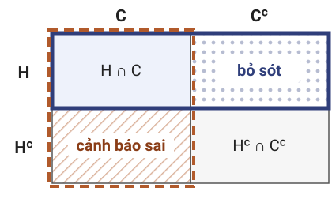
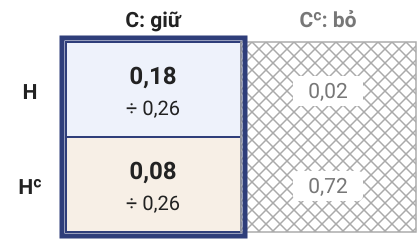
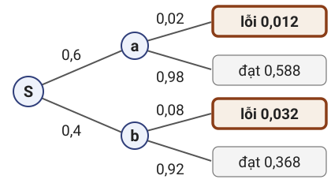
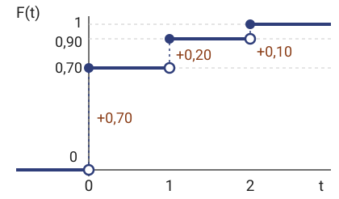
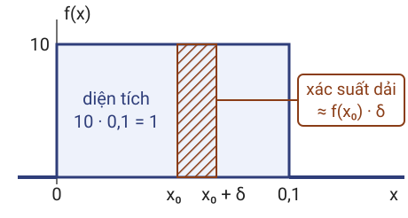
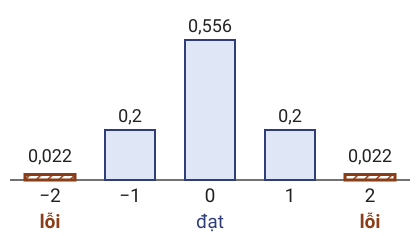
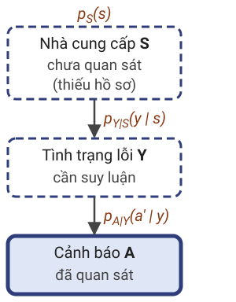
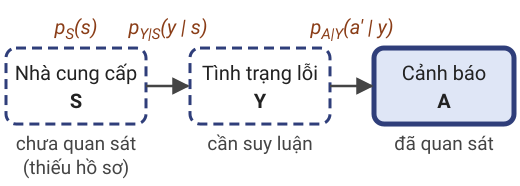
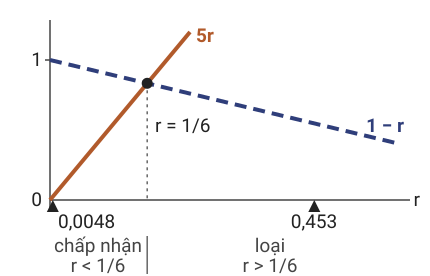

2. Mô hình xác suấtMuốn tính xác suất cảnh báo sai của camera, cần gán xác suất nhất quán cho mọi biến cố.
Không gian mẫu · Biến cố · Tiên đề · Phần bù và hợp
Bài toán sản phẩm và ví dụ camera đều hỏi xác suất của những tình huống như "cảnh báo khi không có người". Để trả lời, cần liệt kê các kết quả có thể, gọi tên các tình huống bằng tập con, gán trọng số thỏa ba tiên đề rồi suy ra quy tắc phần bù và quy tắc hợp. Kết quả giao cho phần sau là xác suất đồng thời $0{,}18$ của "có người và cảnh báo".
Kết quả của một khung hình camera
Nhu cầu: gán xác suất cho các kết quả của camera để tính tần suất cảnh báo sai.
Mỗi kết quả ghi tình trạng thực và phản hồi của bộ phát hiện:
(có người, cảnh báo);
(có người, không cảnh báo);
(không có người, cảnh báo);
(không có người, không cảnh báo).
Với tham số cố định, bộ phát hiện cho cùng một phản hồi trên cùng một khung hình. Ở thời điểm thiết kế, khung hình kế tiếp chưa được biết, nên phản hồi của nó cũng chưa biết.
Bốn kết quả gộp mọi khung hình có cùng tình trạng và cùng phản hồi. Khi câu hỏi chỉ xoay quanh việc cảnh báo đúng hay sai, bốn kết quả là đủ; nếu cần vị trí người đi bộ hay mức tự tin của bộ phát hiện, danh sách kết quả phải được mở rộng.
Thứ tự và nội dung của mỗi kết quả phải được giữ. Khi tung một đồng xu hai lần, "ngửa rồi sấp" và "sấp rồi ngửa" là hai kết quả khác nhau (Ví dụ 10.1); tương tự, (không có người, cảnh báo) là một loại lỗi khác với (có người, không cảnh báo).
Biến cố trên lưới camera
Trực quan. Mỗi phát biểu về khung hình là một tập ô của lưới.

$H$: hàng "có người"; $C$: cột "cảnh báo".
Cảnh báo sai: $H^c\cap C$; bỏ sót: $H\cap C^c$.
$H\cup C$: mọi ô trừ (không có người, không cảnh báo).
"Có người" đúng với hai kết quả, "cảnh báo sai" đúng với một kết quả. Biểu diễn mỗi phát biểu bằng tập các kết quả làm nó đúng cho phép dùng phép toán tập hợp: giao là "cả hai", hợp là "ít nhất một", phần bù là "không".
"Hoặc" trong $H\cup C$ là hoặc bao hàm: ô (có người, cảnh báo) thuộc cả hàng $H$ lẫn cột $C$ nên vẫn thuộc hợp. Loại ô đó khỏi hợp là tính xác suất của một biến cố khác.
Trên hình, hàng $H$ có viền liền đậm và cột $C$ có viền nét đứt; hai loại lỗi được phân biệt bằng nền chấm (bỏ sót) và nền gạch chéo (cảnh báo sai).
Không gian mẫu và biến cố
Định nghĩa. Thí nghiệm ngẫu nhiên (random experiment) là quy trình xác định trước, kết quả chưa biết trước.
Không gian mẫu (sample space) $\Omega$ là tập mọi kết quả; $\omega\in\Omega$ là kết quả sơ cấp.
Với $\Omega$ hữu hạn, biến cố (event) là tập $E\subseteq\Omega$; $E$ xảy ra nếu $\omega\in E$.
Phần bù $E^c$, giao $E\cap F$, hợp $E\cup F$; $E,F$ xung khắc nếu $E\cap F=\varnothing.$
Định nghĩa không đòi hỏi cơ chế bên trong phải ngẫu nhiên: một thuật toán tất định chạy trên đầu vào chưa biết vẫn cho một kết quả chưa biết trước khi đầu vào được quan sát.
Với $\Omega$ hữu hạn, mọi tập con đều được coi là biến cố, tức họ biến cố là $2^\Omega$. Phần bù $E^c=\Omega\setminus E$ là "$E$ không xảy ra"; hai biến cố xung khắc (mutually exclusive) không thể cùng xảy ra.
Murphy dùng sample space cho tập giá trị của một biến ngẫu nhiên; ở đây $\Omega$ là không gian mẫu của thí nghiệm. Định nghĩa không gian xác suất rời rạc của Bài 05c (Định nghĩa 05c.1) là trường hợp $\Omega$ hữu hạn hoặc đếm được.
Nguồn: ghi chú bài giảng, Định nghĩa 10.1–10.2; Murphy (2022), §2.1.
Không gian xác suất
Trực quan. Xác suất của một tập ô là tỉ lệ khung hình rơi vào tập đó.
Tỉ lệ ấy không âm, bằng $1$ trên cả lưới, cộng được trên các tập ô rời nhau.
Định nghĩa. Không gian xác suất là bộ ba $(\Omega,\mathcal F,\mathbb P)$.
$\mathcal F$ là sigma-đại số (σ-algebra) các biến cố; $\mathbb P:\mathcal F\to[0,1]$ thỏa:
(P1) $\mathbb P(E)\ge0$; (P2) $\mathbb P(\Omega)=1$; (P3) với $E_1,E_2,\ldots$ đôi một xung khắc,
$$\mathbb P\Bigl(\bigcup_{i=1}^{\infty}E_i\Bigr)=\sum_{i=1}^{\infty}\mathbb P(E_i).$$
Bốn kết quả của camera chưa đủ để tính tần suất của một loại lỗi: khung hình lấy ở ngã tư đông người có tỉ lệ "có người" khác hẳn khung hình lấy ở một tuyến đường vắng. Cần một quy tắc gán xác suất cho các biến cố, và quy tắc đó phải nhất quán.
Sigma-đại số chứa $\Omega$ và đóng dưới phép lấy phần bù và hợp đếm được. Khi $\Omega$ hữu hạn hoặc đếm được, lấy $\mathcal F=2^\Omega$ và trở lại không gian xác suất rời rạc của Bài 05c; khi $\Omega$ không đếm được, chẳng hạn khi kết quả là một số đo thực, $\mathcal F$ phải được chọn nhỏ hơn $2^\Omega$.
Ba tiên đề không cho xác suất của từng kết quả; chúng là ba tính chất của tỉ lệ khung hình ở dòng trực quan.
Nguồn: ghi chú bài giảng, Định nghĩa 10.3; Murphy (2022), §2.1.3.1.
Cộng tính hữu hạn và tính đơn điệu
Bổ đề. Trên mọi không gian xác suất (Bổ đề 10.4):
Tiên đề (P3) chỉ nói về dãy vô hạn biến cố, trong khi các phép tính của bài cần hai hay ba biến cố. Bổ đề chuyển (P3) về trường hợp hữu hạn.
Tập rỗng: $\varnothing=\Omega^c\in\mathcal F$. Với $E_1=\Omega$ và $E_i=\varnothing$ khi $i\ge2$, (P3) và (P2) cho $1=1+\sum_{i\ge2}\mathbb P(\varnothing)$. Một chuỗi các số hạng không âm bằng nhau có tổng $0$ thì mỗi số hạng bằng $0$.
Cộng tính hữu hạn: thêm $E_{n+1}=E_{n+2}=\cdots=\varnothing$; dãy mới xung khắc, cùng hợp, và các số hạng thêm vào bằng $0$. Đơn điệu: $F\setminus E=(F^c\cup E)^c$ thuộc $\mathcal F$, hai tập $E$ và $F\setminus E$ xung khắc, nên $\mathbb P(F)=\mathbb P(E)+\mathbb P(F\setminus E)\ge\mathbb P(E)$ theo (P1).
Nguồn: ghi chú bài giảng, Bổ đề 10.4; phần 1 và 3 trùng Mệnh đề 05c.2.
Mô hình xác suất hữu hạn
Mệnh đề. $\Omega$ hữu hạn; trọng số $p(\omega)\ge0$ với $\sum_{\omega\in\Omega}p(\omega)=1$. Khi đó
$$\mathbb P(E)=\sum_{\omega\in E}p(\omega)$$
là độ đo xác suất trên họ mọi tập con $2^\Omega$; ngược lại, mọi độ đo trên $2^\Omega$ có dạng này với $p(\omega)=\mathbb P(\{\omega\})$.
Chứng minh. Kiểm tra ba tiên đề; chiều ngược dùng cộng tính hữu hạn.
Lưu ý: chỉ khi các kết quả đồng khả năng thì $\mathbb P(E)=|E|/|\Omega|$.
Với không gian mẫu hữu hạn, mệnh đề cho cách dựng mô hình trực tiếp: một bảng trọng số không âm có tổng bằng $1$ đã là một mô hình xác suất đầy đủ. Mọi bảng xác suất của bài được dựng theo cách này.
Không âm và chuẩn hóa đọc ngay từ trọng số. Với dãy xung khắc $E_1,E_2,\ldots$, mỗi $\omega$ thuộc nhiều nhất một $E_i$, và vì $\Omega$ hữu hạn nên chỉ có hữu hạn $E_i$ khác rỗng; tổng là tổng hữu hạn. Chiều ngược: mỗi $E$ là hợp xung khắc của các tập đơn $\{\omega\}$ với $\omega\in E$.
Mệnh đề không yêu cầu đồng xác suất hay độc lập. Bốn kết quả của camera không có lý do gì phải đồng xác suất.
Nguồn: ghi chú bài giảng, Mệnh đề 10.5; công thức (1.3) của Bài 05c.
Ví dụ: bảng tình huống của camera
Tính $\mathbb P(H)$, $\mathbb P(C)$, $\mathbb P(H\cup C)$ và xác suất phản hồi sai.
$\mathbb P(H)=0{,}18+0{,}02=0{,}20$; $\mathbb P(C)=0{,}18+0{,}08=0{,}26$.
$\mathbb P(H\cup C)=0{,}18+0{,}02+0{,}08=0{,}28$.
Phản hồi sai: $\mathbb P(H^c\cap C)+\mathbb P(H\cap C^c)=0{,}08+0{,}02=0{,}10$.
Diễn giải: $10\%$ khung hình nhận phản hồi sai: $8\%$ là cảnh báo sai, $2\%$ là bỏ sót.
Bốn trọng số không âm và $0{,}18+0{,}02+0{,}08+0{,}72=1$, nên theo mệnh đề vừa chứng minh, bảng là một mô hình xác suất. $\mathbb P(H)$ và $\mathbb P(C)$ là tổng trọng số của các ô trong hàng $H$ và cột $C$.
Phản hồi sai là hợp của hai biến cố xung khắc, nên xác suất của nó là tổng hai ô. Con số $0{,}08$ là xác suất đồng thời của "không có người và cảnh báo" trên mọi khung hình; nó khác tỉ lệ cảnh báo trong nhóm khung hình không có người.
Các trọng số mô tả cách lấy khung hình từ môi trường (Nhận xét 10.8); đổi cách lấy khung hình thì phải dựng lại bảng, kể cả khi bộ phát hiện giữ nguyên. Tổng $\mathbb P(H)+\mathbb P(C)=0{,}46$ lớn hơn $\mathbb P(H\cup C)=0{,}28$ đúng bằng ô chung $0{,}18$.
Nguồn: ghi chú bài giảng, Ví dụ 10.2.
Phần bù và hợp hai biến cố
Nhu cầu: tính xác suất của phần bù và của hợp từ xác suất của từng biến cố.
Trực quan. $\mathbb P(H)+\mathbb P(C)=0{,}46$ đếm ô chung hai lần; $\mathbb P(H\cup C)=0{,}28$.
Mệnh đề. Với mọi $E,F\in\mathcal F$:
$$\begin{aligned}\mathbb P(E^c)&=1-\mathbb P(E),\\ \mathbb P(E\cup F)&=\mathbb P(E)+\mathbb P(F)\\ &\quad-\mathbb P(E\cap F).\end{aligned}$$
Trên bảng camera, công thức hợp cho $\mathbb P(H\cup C)=0{,}20+0{,}26-0{,}18=0{,}28$, khớp phép cộng trực tiếp ba ô; công thức phần bù cho cùng số $1-0{,}72$, vì $(H\cup C)^c$ chỉ gồm kết quả (không có người, không cảnh báo). Bài tập 10.5 (bảng camera dưới một quy trình lấy mẫu khác) để tự học.
Hai công thức không cần giả thiết nào về quan hệ giữa $E$ và $F$. Khi $E$ và $F$ xung khắc, $\mathbb P(E\cap F)=\mathbb P(\varnothing)=0$ và công thức hợp trở thành công thức cộng. Lỗi thường gặp là cộng $\mathbb P(E)+\mathbb P(F)$ khi giao khác rỗng; các kết quả trong giao khi đó bị cộng hai lần.
Bỏ số hạng không âm $\mathbb P(E\cap F)$ được bất đẳng thức hợp $\mathbb P(E\cup F)\le\mathbb P(E)+\mathbb P(F)$ (Hệ quả 10.7), đúng cả khi chưa biết giao.
Nguồn: ghi chú bài giảng, Mệnh đề 10.6; trùng phần 2 và 4 của Mệnh đề 05c.2; Murphy (2022), §2.1.3.
Chứng minh: phần bù và hợp hai biến cố
Mỗi biến cố được viết thành hợp các mảnh xung khắc, rồi áp dụng cộng tính hữu hạn.
Công thức phần bù. $E$, $E^c$ xung khắc, hợp bằng $\Omega$, nên $1=\mathbb P(E)+\mathbb P(E^c)$.
Ba mảnh xung khắc. $E\cup F$ là hợp của $E\setminus F$, $E\cap F$, $F\setminus E$:
$$\begin{aligned}\mathbb P(E\cup F)&=\mathbb P(E\setminus F)+\mathbb P(E\cap F)+\mathbb P(F\setminus E),\\ \mathbb P(E)&=\mathbb P(E\setminus F)+\mathbb P(E\cap F),\\ \mathbb P(F)&=\mathbb P(F\setminus E)+\mathbb P(E\cap F).\end{aligned}$$
Công thức hợp. Thế $\mathbb P(E\setminus F)=\mathbb P(E)-\mathbb P(E\cap F)$ và tương tự cho $F\setminus E$ vào dòng đầu.
Mục tiêu là chỉ ra số hạng giao bị trừ ở đâu. Bước phần bù dùng (P2) và cộng tính hữu hạn cho hai tập.
Ba mảnh thuộc $\mathcal F$ vì $E\setminus F=(E^c\cup F)^c$, $E\cap F=(E^c\cup F^c)^c$, $F\setminus E=(F^c\cup E)^c$, thu được từ các tập trong $\mathcal F$ bằng phần bù và hợp. Chúng đôi một xung khắc; ba mảnh có hợp $E\cup F$, hai mảnh đầu có hợp $E$, hai mảnh sau có hợp $F$. Mỗi dòng của khối công thức là cộng tính hữu hạn (Bổ đề 10.4, phần 2).
Thế hai dòng sau vào dòng đầu: $\mathbb P(E\cup F)=\mathbb P(E)-\mathbb P(E\cap F)+\mathbb P(E\cap F)+\mathbb P(F)-\mathbb P(E\cap F)$, tức công thức hợp.
Nguồn: ghi chú bài giảng, chứng minh Mệnh đề 10.6.
Bài tập: bảng của hệ thống sản phẩm
Câu hỏi: Kiểm tra bảng là mô hình xác suất; tính $\mathbb P(Y=1)$, $\mathbb P(A=1)$, xác suất phản hồi sai.
Lời giải: bốn số không âm, tổng bằng $1.$ Suy ra $\mathbb P(Y=1)=0{,}044$, $\mathbb P(A=1)=0{,}0874$.
Phản hồi sai: $0{,}0044+0{,}0478=0{,}0522$; phần bù cho $1-(0{,}0396+0{,}9082)$, cùng số.
Diễn giải: khoảng $5{,}2\%$ sản phẩm nhận phản hồi sai.
Bảng cho xác suất đồng thời của tình trạng và phản hồi. Hệ thống sản phẩm ở giai đoạn đầu có cùng cấu trúc với camera: tình trạng thực là lỗi hoặc đạt, phản hồi là cảnh báo hoặc không. Ở đây $\{Y=1\}$ và $\{A=1\}$ chỉ dùng như tên của các biến cố "lỗi" và "cảnh báo".
Gợi ý: xác suất lỗi là tổng hàng "lỗi" ($0{,}0396+0{,}0044$), xác suất cảnh báo là tổng cột "cảnh báo" ($0{,}0396+0{,}0478$), còn phản hồi sai là hợp của hai biến cố xung khắc.
Phản hồi sai là hợp của hai biến cố xung khắc $\{Y=1\}\cap\{A=0\}$ và $\{Y=0\}\cap\{A=1\}$. Bảng cho sẵn tỉ lệ lỗi chung $0{,}044$ mà không nêu nguồn gốc của nó; con số này dựng được từ tỉ lệ lỗi của từng nhà cung cấp. Tỉ lệ lỗi trong nhóm bị cảnh báo cần thêm một phép chia cho $0{,}0874$.
Nguồn: ghi chú bài giảng, mục 4.5 (bảng giai đoạn 1).
3. Xác suất có điều kiện và định lý BayesMuốn biết xác suất lỗi sau một cảnh báo, nhân tỉ lệ lỗi với tỉ lệ cảnh báo trong từng nhóm rồi chuẩn hóa.
Xác suất có điều kiện · Quy tắc nhân · Xác suất toàn phần · Định lý Bayes
Phần trước cho một độ đo $\mathbb P$ trên các biến cố và xác suất đồng thời $0{,}18$ của "có người và cảnh báo". Người dùng hệ thống cần tỉ lệ trong một nhóm: trong các khung hình bị cảnh báo, trong các sản phẩm bị cảnh báo. Việc cần làm là chuẩn hóa trong một nhóm, ghép các tỉ lệ trong nhóm bằng phép nhân, rồi đảo chiều điều kiện. Kết quả giao cho phần sau là hậu nghiệm $198/437$ và quy tắc nhân, dùng lại khi ghép ba biến.
Khung hình có cảnh báo
Nhu cầu: tỉ lệ có người trong các khung hình bị cảnh báo.
Xác suất lỗi của một sản phẩm bị cảnh báo cần cùng phép tính.

$\mathbb P(H\cap C)=0{,}18$ là xác suất đồng thời trên mọi khung hình.
Trực quan. Biết $C$ xảy ra: bỏ cột $C^c$, chia hai ô còn lại cho $\mathbb P(C)=0{,}26$.
Tổng trọng số trong cột $C$ sau khi chia bằng $1$.
Con số $0{,}18$ tính trên mọi khung hình, kể cả khung hình không bị cảnh báo. Khi chỉ xét các khung hình có cảnh báo, tập kết quả đang xét thu hẹp lại, và trọng số phải được chuẩn hóa trên tập đó.
Biết $C$ đã xảy ra nghĩa là loại mọi kết quả ngoài $C$ và chia trọng số của các kết quả còn lại cho tổng của chúng. Sau phép chia, cột $C$ trở thành một mô hình xác suất mới có tổng trọng số bằng $1$: $0{,}18/0{,}26+0{,}08/0{,}26=1$.
Nguồn: ghi chú bài giảng, mục 5.1.
Xác suất có điều kiện
Định nghĩa. Cho $E,F\in\mathcal F$ với $\mathbb P(F)>0$.
Xác suất có điều kiện (conditional probability) của $E$ khi biết $F$ là
$$\mathbb P(E\mid F)=\frac{\mathbb P(E\cap F)}{\mathbb P(F)}.$$
Ý nghĩa: với $F$ cố định, $\mathbb P(\cdot\mid F)$ là một độ đo xác suất gán xác suất $1$ cho $F$.
Do đó các quy tắc phần bù, hợp đúng cho $\mathbb P(\cdot\mid F)$.
Phép giao giữ lại phần của $E$ nằm trong $F$; phép chia cho $\mathbb P(F)>0$ làm tổng trọng số trong $F$ bằng $1$.
Ba tiên đề đúng cho $\mathbb P(\cdot\mid F)$: $\mathbb P(E\cap F)\ge0$; $\mathbb P(\Omega\mid F)=\mathbb P(F)/\mathbb P(F)=1$; và nếu $E_1,E_2,\ldots$ đôi một xung khắc thì các $E_i\cap F$ cũng đôi một xung khắc, nên (P3) cho tổng xác suất của chúng, rồi mọi số hạng cùng được chia cho hằng số dương $\mathbb P(F)$. Vì vậy mọi kết quả đã chứng minh cho $\mathbb P$ cũng đúng cho $\mathbb P(\cdot\mid F)$.
Nguồn: ghi chú bài giảng, Định nghĩa 10.9; trùng Định nghĩa 05c.8; Murphy (2022), §2.1.3.
Ví dụ: đọc lại cảnh báo của camera
Theo bảng camera: $\mathbb P(H\cap C)=0{,}18$, $\mathbb P(H^c\cap C)=0{,}08$, $\mathbb P(H)=0{,}20$, $\mathbb P(C)=0{,}26$.
Tính $\mathbb P(H\mid C)$, $\mathbb P(C\mid H)$, $\mathbb P(C\mid H^c)$.
$$\begin{aligned}\mathbb P(H\mid C)&=\frac{0{,}18}{0{,}26}=\frac9{13}\approx0{,}6923,\\ \mathbb P(C\mid H)&=\frac{0{,}18}{0{,}20}=0{,}90,\\ \mathbb P(C\mid H^c)&=\frac{0{,}08}{0{,}80}=0{,}10.\end{aligned}$$
Câu hỏi: So sánh $\mathbb P(H\mid C)$ với $\mathbb P(C\mid H)$.
Diễn giải: $\mathbb P(C\mid H)$ chuẩn hóa trong nhóm có người, $\mathbb P(H\mid C)$ chuẩn hóa trong nhóm bị cảnh báo.
Kiểm tra: phần bù trong nhóm có cảnh báo cho $\mathbb P(H^c\mid C)=0{,}08/0{,}26=4/13$, và $9/13+4/13=1$.
Trong các khung hình có người, hệ thống cảnh báo với xác suất $0{,}90$; trong các khung hình bị cảnh báo, xác suất thực sự có người chỉ khoảng $0{,}6923$. Hai điều kiện chọn ra hai nhóm khung hình khác nhau, nên đổi chỗ hai biến cố trong ký hiệu điều kiện làm đổi đại lượng cần tính.
$\mathbb P(C\mid H^c)=0{,}08/0{,}80=0{,}10$ là tỉ lệ cảnh báo nhầm, chia cho xác suất $0{,}80$ của nhóm không có người. Nó khác xác suất phản hồi sai $0{,}08+0{,}02=0{,}10$, là tổng hai ô chia cho $1$, tính trên mọi khung hình; hai số trùng nhau chỉ do bảng này.
Nguồn: ghi chú bài giảng, Ví dụ 10.3.
Cây xác suất của nguồn hàng và lỗi
Nhu cầu: thiếu hồ sơ nguồn hàng; tính xác suất lỗi từ tỉ lệ lỗi của từng nhà cung cấp.

Trực quan. Mỗi đường từ gốc tới lá là một tích; cộng các lá lỗi.
$$\begin{aligned}&\mathbb P(Y=1)\\ &\quad=0{,}6\cdot0{,}02+0{,}4\cdot0{,}08\\ &\quad=0{,}012+0{,}032=0{,}044.\end{aligned}$$
Diễn giải: xác suất lỗi trước quan sát $4{,}4\%$ là trung bình có trọng số $0{,}6$, $0{,}4$.
Ở đây $\{S=a\}$, $\{Y=1\}$ chỉ là tên của các biến cố "sản phẩm đến từ nhà cung cấp $a$" và "sản phẩm lỗi". Các nhánh không đồng xác suất: nhánh $a$ có xác suất $0{,}6$, nhánh $b$ có xác suất $0{,}4$.
Trung bình cộng $5\%$ của hai tỉ lệ lỗi bỏ qua việc nhà cung cấp $a$ giao nhiều hàng hơn; trọng số đúng là tỉ lệ nguồn hàng.
Mỗi lá là một xác suất đồng thời, chẳng hạn $\mathbb P(S=b,Y=1)=0{,}4\cdot0{,}08=0{,}032$; bốn lá có tổng bằng $1$.
Nguồn: ghi chú bài giảng, Ví dụ 10.4 (bước tiên nghiệm) và hình cây ở mục 5.3; hình vẽ lại cho trang chiếu.
Quy tắc nhân
Mệnh đề (quy tắc nhân, product rule). Nếu $\mathbb P(F)>0$ thì $\mathbb P(E\cap F)=\mathbb P(E\mid F)\,\mathbb P(F)$.
Dạng ba biến cố, còn gọi là quy tắc chuỗi (chain rule): nếu $\mathbb P(E\cap F)>0$ thì
$$\begin{aligned}&\mathbb P(E\cap F\cap G)\\ &\quad=\mathbb P(E)\,\mathbb P(F\mid E)\\ &\qquad\times\mathbb P(G\mid E\cap F).\end{aligned}$$
Chứng minh. Nhân hai vế của định nghĩa có điều kiện với mẫu số; áp dụng hai lần.
Ý nghĩa: tích dọc một đường của cây là xác suất đồng thời; không cần giả thiết nào thêm.
Với ba biến cố: $\mathbb P(E\cap F\cap G)=\mathbb P(G\mid E\cap F)\,\mathbb P(E\cap F)=\mathbb P(G\mid E\cap F)\,\mathbb P(F\mid E)\,\mathbb P(E)$; đẳng thức thứ nhất dùng điều kiện $E\cap F$, đẳng thức thứ hai dùng điều kiện $E$. Vì $E\cap F\subseteq E$, tính đơn điệu cho $\mathbb P(E)\ge\mathbb P(E\cap F)>0$, nên mọi xác suất có điều kiện đều xác định.
Quy tắc nhân dựng xác suất đồng thời theo thứ tự của cơ chế sinh dữ liệu: chọn nhà cung cấp, rồi tình trạng lỗi, rồi phản hồi cảm biến. Mọi phụ thuộc được giữ trong các xác suất có điều kiện, nên quy tắc chuỗi không cần giả thiết nào thêm.
Nguồn: ghi chú bài giảng, Mệnh đề 10.10; trùng Mệnh đề 05c.9; Murphy (2022), §2.2.3.
Xác suất toàn phần và định lý Bayes
Định lý. $B_1,\ldots,B_m$ là một phân hoạch (partition) của $\Omega$: đôi một xung khắc, hợp bằng $\Omega$; $\mathbb P(B_j)>0$; $E\in\mathcal F$.
Công thức xác suất toàn phần (law of total probability):
$$\mathbb P(E)=\sum_{j=1}^m\mathbb P(E\mid B_j)\,\mathbb P(B_j).$$
Nếu thêm $\mathbb P(E)>0$, định lý Bayes (Bayes' rule) cho, với $k=1,\ldots,m$:
$$\begin{aligned}&\mathbb P(B_k\mid E)\\ &\quad=\frac{\mathbb P(E\mid B_k)\,\mathbb P(B_k)}{\sum_{j=1}^m\mathbb P(E\mid B_j)\,\mathbb P(B_j)}.\end{aligned}$$
Mỗi kết quả thuộc đúng một nhóm $B_j$. Nhóm có xác suất $0$ góp $\mathbb P(E\cap B_j)\le\mathbb P(B_j)=0$ vào mọi tổng theo tính đơn điệu, nên có thể bỏ khỏi tổng; vì vậy giả thiết $\mathbb P(B_j)>0$ không làm mất tính tổng quát.
Trên cây nguồn hàng, phân hoạch là $\{S=a\},\{S=b\}$ và $E=\{Y=1\}$: công thức toàn phần là phép cộng hai lá lỗi. Định lý Bayes là phép "giữ các đường phù hợp quan sát rồi chia cho tổng".
Nguồn: ghi chú bài giảng, Định lý 10.11; gộp Mệnh đề 05c.10 và Định lý 05c.11; Murphy (2022), §2.3.
Chứng minh: xác suất toàn phần
Biến cố $E$ được chia theo các nhóm $B_j$ rồi cộng lại.
Các mảnh xung khắc. Các $E\cap B_j$ đôi một xung khắc, hợp bằng $E\cap\Omega=E$.
$$\begin{aligned}\mathbb P(E)&=\sum_{j=1}^m\mathbb P(E\cap B_j)\\ &=\sum_{j=1}^m\mathbb P(E\mid B_j)\,\mathbb P(B_j).\end{aligned}$$
Đẳng thức thứ nhất: cộng tính hữu hạn; thứ hai: quy tắc nhân, dùng $\mathbb P(B_j)>0$.
Mục tiêu là tính xác suất của quan sát $E$ từ các xác suất trong từng nhóm. Các $E\cap B_j$ thuộc $\mathcal F$ vì $\mathcal F$ đóng với giao hữu hạn, và xung khắc vì $(E\cap B_i)\cap(E\cap B_j)\subseteq B_i\cap B_j=\varnothing$ khi $i\ne j$.
Cộng tính hữu hạn là Bổ đề 10.4, phần 2. Trên cây nguồn hàng, đẳng thức thứ nhất cộng hai lá lỗi $0{,}012+0{,}032$; đẳng thức thứ hai viết mỗi lá thành tích dọc đường.
Công thức toàn phần đi từ các nhóm tới xác suất của quan sát; định lý Bayes đi theo chiều ngược lại.
Nguồn: ghi chú bài giảng, chứng minh Định lý 10.11, bước 1.
Chứng minh: định lý Bayes
Viết $\mathbb P(B_k\mid E)$ theo định nghĩa, rồi đổi chiều điều kiện ở tử số.
$$\begin{aligned}&\mathbb P(B_k\mid E)=\frac{\mathbb P(B_k\cap E)}{\mathbb P(E)}\\ &\quad=\frac{\mathbb P(E\mid B_k)\,\mathbb P(B_k)}{\mathbb P(E)}.\end{aligned}$$
Đẳng thức thứ nhất: định nghĩa, cần $\mathbb P(E)>0$; thứ hai: quy tắc nhân, dùng $\mathbb P(B_k)>0$.
Công thức Bayes. Thay mẫu số bằng công thức xác suất toàn phần.
Phép đổi chiều điều kiện nằm ở tử số: $\mathbb P(B_k\cap E)$ được viết bằng quy tắc nhân với điều kiện $B_k$, hợp lệ vì $\mathbb P(B_k)>0$. Giả thiết $\mathbb P(E)>0$ chỉ dùng ở đẳng thức thứ nhất.
Sau khi thay mẫu số, xác suất $\mathbb P(B_k\mid E)$ của mỗi nhóm tính được từ xác suất của các nhóm và xác suất của quan sát trong từng nhóm, không cần biết trước $\mathbb P(E)$. Mẫu số giống nhau cho mọi $k$.
Nguồn: ghi chú bài giảng, chứng minh Định lý 10.11, bước 2.
Tiên nghiệm, hợp lý và hậu nghiệm
Định nghĩa. Trong định lý Bayes:
$\mathbb P(B_k)$, $\mathbb P(B_k\mid E)$ là xác suất tiên nghiệm (prior) và hậu nghiệm (posterior).
$\mathbb P(E\mid B_k)$, xem như hàm của $k$, là hàm hợp lý (likelihood); tổng theo $k$ không nhất thiết bằng $1$.
$\mathbb P(E)$ ở mẫu số là hợp lý biên (marginal likelihood).
Ký hiệu: vế trái bằng vế phải nhân một hằng số dương không phụ thuộc $k$ (ở đây $1/\mathbb P(E)$):
$$\mathbb P(B_k\mid E)\propto\mathbb P(E\mid B_k)\,\mathbb P(B_k).$$
Định lý Bayes được đọc như một phép cập nhật thông tin: tiên nghiệm là xác suất trước quan sát, hậu nghiệm là xác suất sau quan sát. Hàm hợp lý là xác suất của quan sát đã cố định, xem như hàm của giả thuyết $k$; nó không phải một phân phối theo $k$. Mẫu số cộng theo mọi giả thuyết, nên gọi là hợp lý biên.
Vì mẫu số không phụ thuộc $k$, hậu nghiệm tỉ lệ với tiên nghiệm nhân hợp lý; hằng số tỉ lệ được xác định bằng điều kiện tổng các hậu nghiệm bằng $1$. Bài 05c gọi hàm hợp lý là độ hợp lý.
Nguồn: ghi chú bài giảng, mục 5.2; Murphy (2022), §2.3.
Ví dụ: cập nhật xác suất sản phẩm lỗi
Độ nhạy (sensitivity) $\mathbb P(A=1\mid Y=1)=0{,}9$; tỉ lệ cảnh báo nhầm (false positive rate, FPR) $\mathbb P(A=1\mid Y=0)=0{,}05$.
Phân hoạch $\{Y=1\},\{Y=0\}$; tiên nghiệm $\mathbb P(Y=1)=0{,}044$ từ cây nguồn hàng.
Tính $\mathbb P(Y=1\mid A=1)$.
$$\begin{aligned}&\mathbb P(A=1)=0{,}9\cdot0{,}044\\ &\qquad+0{,}05\cdot0{,}956=0{,}0874,\\ &\mathbb P(Y=1\mid A=1)=\frac{0{,}0396}{0{,}0874}\\ &\qquad=\frac{198}{437}\approx0{,}4531.\end{aligned}$$
Diễn giải: sau cảnh báo, xác suất lỗi tăng từ $0{,}044$ lên khoảng $0{,}45$, khác xa $0{,}9$.
Hai dòng đầu của khối công thức là công thức toàn phần với phân hoạch $\{Y=1\},\{Y=0\}$; hai dòng sau là định lý Bayes với $E=\{A=1\}$. Phép tính chỉ dùng $\mathbb P(A=1\mid Y=y)$; giả thiết "khi biết $Y$, nguồn hàng không đổi xác suất cảnh báo" chỉ cần khi tính các xác suất có cả nguồn hàng và cảnh báo.
Kiểm tra bằng $10\,000$ sản phẩm theo đúng các tỉ lệ của mô hình: $440$ sản phẩm lỗi, trong đó $396$ bị cảnh báo; $9560$ sản phẩm đạt, trong đó $478$ bị cảnh báo nhầm. Trong $874$ sản phẩm bị cảnh báo, tỉ lệ lỗi là $396/874=198/437$; tỉ lệ sản phẩm đạt khoảng $239/437\approx0{,}5469$.
Tiên nghiệm (tỉ lệ lỗi theo nguồn hàng) và hợp lý (đặc tính cảm biến) là hai thành phần riêng; khi cơ cấu nguồn hàng thay đổi, hậu nghiệm thay đổi dù cảm biến giữ nguyên.
Nguồn: ghi chú bài giảng, Ví dụ 10.4; Murphy (2022), §2.3.1 (ví dụ xét nghiệm y tế cho cùng hiện tượng).
Bài tập: đọc điều kiện trên bảng camera
Câu hỏi: (a) Tính $\mathbb P(C\mid H)$, $\mathbb P(C\mid H^c)$, $\mathbb P(H\mid C)$; (b) kiểm tra phát biểu "$90\%$ cảnh báo ứng với khung hình có người".
Lời giải: (a) $\mathbb P(C\mid H)=0{,}09/0{,}10=0{,}9$, $\mathbb P(C\mid H^c)=0{,}18/0{,}90=0{,}2$.
$\mathbb P(H\mid C)=0{,}09/0{,}27=1/3$.
(b) Phát biểu sai vì đảo điều kiện: $\mathbb P(C\mid H)=0{,}9$ nhưng $\mathbb P(H\mid C)=1/3$.
Cách khác: định lý Bayes cho $0{,}9\cdot0{,}1/(0{,}9\cdot0{,}1+0{,}2\cdot0{,}9)=1/3$.
Đây là một camera khác, đặt trên tuyến đường vắng: tiên nghiệm có người là $0{,}10$ thay cho $0{,}20$, tỉ lệ cảnh báo nhầm là $0{,}2$ thay cho $0{,}10$. Gợi ý: mẫu số của mỗi xác suất có điều kiện là xác suất của biến cố đứng sau dấu "$\mid$"; tổng một hàng cho $\mathbb P(H)=0{,}10$, tổng một cột cho $\mathbb P(C)=0{,}27$.
Câu (b) trên trang là câu (c) của Bài tập 10.1; câu (b) của tệp bài tập để tự học.
Kiểm tra trên $100$ khung hình: $10$ khung hình có người, $9$ bị cảnh báo; $90$ khung hình không có người, $18$ bị cảnh báo; tỉ lệ có người trong $27$ cảnh báo là $9/27=1/3$. Trên tuyến đường vắng, các cảnh báo nhầm lấn át các cảnh báo đúng. Nhầm lẫn này còn được gọi là ngụy biện của công tố viên (prosecutor's fallacy).
Nguồn: Bài tập 10.1; Murphy (2022), Bài tập 2.10.
4. Biến ngẫu nhiên, phân phối và độc lậpMuốn mô tả nhãn, nguồn hàng, tín hiệu đo và ghép chúng, cần phân phối của từng biến và quy tắc độc lập.
Hàm khối xác suất · Hàm phân phối tích lũy · Mật độ · Họ phân phối · Độc lập có điều kiện
Định lý Bayes đã cho hậu nghiệm $198/437$; hậu nghiệm của nguồn hàng còn cần biết cảnh báo phụ thuộc nguồn hàng thế nào. Nhà cung cấp, nhãn lỗi, cảnh báo và tín hiệu đo là các hàm của một kết quả kiểm định, có phân phối riêng và được ghép bằng độc lập có điều kiện. Kết quả giao cho các phần sau là phân phối của nhãn lỗi và giả thiết $A\perp S\mid Y$ ở dạng dùng được trong phép nhân.
Đại lượng quan sát của một lần kiểm định
Nhu cầu: một lần kiểm định cho cùng lúc nguồn hàng, tình trạng lỗi, cảnh báo, giá trị đo.
Mỗi đại lượng gán một giá trị cho mỗi kết quả $\omega$.
Ví dụ. $S(\omega)\in\{a,b\}$; $Y(\omega)=1$ nếu sản phẩm lỗi; $A(\omega)=1$ nếu có cảnh báo.
Trực quan. Hàm cố định; giá trị chưa biết vì $\omega$ chưa biết.
Khi quan tâm số sản phẩm lỗi, ta lấy một hàm của kết quả; khi quan tâm tín hiệu đo, ta lấy một hàm khác. Các đại lượng ấy được mô tả trên cùng một không gian xác suất.
Hai biến ngẫu nhiên có thể có cùng phân phối mà vẫn là hai hàm khác nhau trên $\Omega$. Các biến cố của các phần trước được giữ nguyên trong ngôn ngữ mới: $\{Y=1\}$ là biến cố sản phẩm lỗi, $\{A=1\}$ là biến cố có cảnh báo.
Nguồn: ghi chú bài giảng, mục 6.1.
Biến ngẫu nhiên và phân phối
Định nghĩa. Biến ngẫu nhiên (random variable) thực là ánh xạ $X:\Omega\to\mathbb R$ với $\{X\le t\}\in\mathcal F$ cho mọi $t$.
Phân phối (distribution) của $X$ gán cho tập Borel $B$ xác suất
$$\mathbb P(X\in B)=\mathbb P\bigl(\{\omega:X(\omega)\in B\}\bigr).$$
Biến chỉ thị (indicator) $\mathbf 1_E$ bằng $1$ trên $E$, bằng $0$ ngoài $E$.
Biến phân loại (categorical variable) nhận giá trị trong một tập nhãn hữu hạn, như $S\in\{a,b\}$.
Vector ngẫu nhiên trong $\mathbb R^d$ là bộ $d$ biến thực trên cùng $\Omega$.
Điều kiện $\{X\le t\}\in\mathcal F$ gọi là tính đo được (measurable); trong mô hình hữu hạn với $\mathcal F=2^\Omega$, mọi hàm đều đo được. Tập Borel là các khoảng, các tập đơn điểm và mọi tập thu được từ chúng bằng phần bù và hợp đếm được. Với biến phân loại, điều kiện tương ứng là $\{\omega:X(\omega)=s\}\in\mathcal F$ cho mọi nhãn $s$.
$Y$ là biến chỉ thị của biến cố sản phẩm lỗi, nên $\{Y=1\}$ chính là biến cố đó. Cùng một hàm có phân phối khác khi độ đo $\mathbb P$ thay đổi, chẳng hạn khi cơ cấu nguồn hàng thay đổi.
Nguồn: ghi chú bài giảng, Định nghĩa 10.14; Murphy (2022), §2.2.
Hàm khối xác suất và hàm phân phối tích lũy
Định nghĩa. $X$ nhận giá trị trong tập đếm được $\mathcal X$: hàm khối xác suất (probability mass function, PMF) là
$$\begin{gathered}p_X(x)=\mathbb P(X=x),\\ p_X(x)\ge0,\quad \sum_{x\in\mathcal X}p_X(x)=1.\end{gathered}$$
Nhu cầu: xác suất $X$ không vượt ngưỡng $t$, với mọi $t$.
Trực quan. Cộng dồn các khối xác suất đến $t$.
Định nghĩa. $X$ thực: hàm phân phối tích lũy (cumulative distribution function, CDF) là $F_X(t)=\mathbb P(X\le t)$; với $t_1\lt t_2{:}$
$$\begin{aligned}&\mathbb P(t_1\lt X\le t_2)\\ &\quad=F_X(t_2)-F_X(t_1).\end{aligned}$$
Nhãn lỗi, nhãn nhà cung cấp và mức xử lý chỉ nhận hữu hạn giá trị; phân phối của chúng xác định bởi xác suất của từng giá trị. Tổng các khối bằng $1$ vì $\Omega$ là hợp đếm được của các biến cố xung khắc $\{X=x\}$, và (P3) áp dụng.
Hàm phân phối tích lũy không giảm, liên tục phải, tiến về $0$ khi $t\to-\infty$ và về $1$ khi $t\to+\infty$. Nó không giảm vì $\{X\le s\}\subseteq\{X\le t\}$ khi $s\lt t$. Tính liên tục phải và hai giới hạn cần tính liên tục của độ đo đối với dãy tập đơn điệu và được dùng không chứng minh. Công thức hiệu đến từ việc $\{X\le t_1\}$ và $\{t_1\lt X\le t_2\}$ xung khắc, có hợp $\{X\le t_2\}$. Với phân phối rời rạc, dấu bằng ở hai đầu khoảng phải được giữ đúng.
Nguồn: ghi chú bài giảng, Định nghĩa 10.15; trùng Định nghĩa 05c.17–05c.18; Murphy (2022), §2.2.1, §2.2.2.1.
Ví dụ: mức xử lý sản phẩm
Mức xử lý $X\in\{0,1,2\}$: $p_X(0)=0{,}70$, $p_X(1)=0{,}20$, $p_X(2)=0{,}10$. Tính $F_X$, $\mathbb P(X\le1)$, $\mathbb P(X\ge1)$.

$$F_X(t)=\begin{cases}0,&t\lt 0,\\0{,}70,&0\le t\lt 1,\\0{,}90,&1\le t\lt 2,\\1,&t\ge2.\end{cases}$$
$\mathbb P(X\le1)=F_X(1)=0{,}90$;
$\mathbb P(X\ge1)=1-p_X(0)=0{,}30.$
Diễn giải: $\mathbb P(X\ge1)$ là xác suất cần can thiệp, lớn hơn $\mathbb P(X\gt1)$ một khối $0{,}20.$
Ba mức là không can thiệp, kiểm tra lại, sửa chữa. Hàm phân phối tích lũy cộng các khối xác suất đến $t$; tại mỗi giá trị $0,1,2$ nó nhảy lên đúng bằng khối tại đó. Chấm đặc ở đầu trái mỗi bậc thể hiện tính liên tục phải.
Kiểm tra: $\mathbb P(0\lt X\le2)=F_X(2)-F_X(0)=1-0{,}70=0{,}30$, khớp tổng hai khối $0{,}20+0{,}10$. Các mức $0,1,2$ là mã quy ước; khoảng cách giữa chúng chỉ có ý nghĩa khi cách mã hóa phản ánh một đại lượng thật, chẳng hạn chi phí xử lý.
Bài tập 10.7 (phân phối rời rạc ba giá trị) để tự học.
Nguồn: ghi chú bài giảng, Ví dụ 10.7.
Mật độ xác suất

Nhu cầu: tín hiệu đo như điện áp nhận mọi giá trị trong một khoảng; xác suất mỗi điểm bằng $0$.
Trực quan. Xác suất trên một khoảng là diện tích dưới đường mật độ.
Định nghĩa. $X$ có hàm mật độ xác suất (probability density function, PDF) $f_X$ nếu
$f_X\ge0$, $\int f_X=1$ và với mọi tập Borel $B$:
$$\mathbb P(X\in B)=\int_Bf_X(x)\,dx.$$
Mật độ là một hàm đo được. Lấy $B=(-\infty,t]$ được $F_X(t)=\int_{-\infty}^tf_X(x)\,dx$; tại điểm $x$ mà $f_X$ liên tục, $F_X'(x)=f_X(x)$. Với $B=\{x\}$, tích phân trên một điểm bằng $0$, nên $\mathbb P(X=x)=0$ tại mọi $x$.
Mật độ có đơn vị là nghịch đảo đơn vị đo của $X$, còn xác suất không có đơn vị; vì vậy giá trị mật độ có thể lớn hơn $1$. Phân phối đều trên $[0;\,0{,}1]$ có mật độ $10$ trên đoạn đó, diện tích toàn phần $10\cdot0{,}1=1$. Trên hình, dải hẹp $[x_0,x_0+\delta]$ có xác suất $\mathbb P(x_0\le X\le x_0+\delta)\approx f_X(x_0)\,\delta$; xấp xỉ này đúng khi $\delta>0$ nhỏ và $f_X$ liên tục tại $x_0$.
Nguồn: ghi chú bài giảng, Định nghĩa 10.18; mở rộng Định nghĩa 05c.22; Murphy (2022), §2.2.2, §2.6.2.
Bài tập: mật độ đều trên một đoạn
Thời gian xử lý $T$ (giây): $f_T(t)=2$ khi $0\le t\le0{,}5$, bằng $0$ ngoài đoạn này.
Câu hỏi: (a) Kiểm tra $f_T$ là một mật độ dù $f_T(t)=2>1$ trên $[0;\,0{,}5]$. (b) Tính $\mathbb P(T=0{,}2)$ và $\mathbb P(0{,}1\le T\le0{,}3)$.
Lời giải:
$$\begin{gathered}\int_{\mathbb R}f_T=\int_0^{0{,}5}2\,dt=1,\\ \mathbb P(T=0{,}2)=0,\\ \mathbb P(0{,}1\le T\le0{,}3)=2\cdot0{,}2=0{,}4.\end{gathered}$$
Diễn giải: $f_T(0{,}2)=2$ là mật độ, có đơn vị nghịch đảo của giây.
Gợi ý: xác suất trên một khoảng là diện tích dưới đồ thị mật độ trên khoảng đó; khoảng ở câu (b) dài $0{,}2$ giây, một điểm có độ dài $0$.
Câu (c) của Bài tập 10.2 để tự học: tích phân $f_T$ từ $-\infty$ đến $t$ cho $F_T(t)=0$ khi $t\lt0$, $F_T(t)=2t$ khi $0\le t\le0{,}5$, $F_T(t)=1$ khi $t>0{,}5$. Kiểm tra: $F_T(0{,}3)-F_T(0{,}1)=0{,}6-0{,}2=0{,}4$, khớp câu (b); vì $\mathbb P(T=0{,}1)=0$, tính hay không tính đầu mút không đổi kết quả.
Nguồn: Bài tập 10.2.
Phân phối Bernoulli và phân phối phân loại
Nhu cầu: nhãn lỗi nhận hai giá trị, loại lỗi nhận $K$ giá trị.
Định nghĩa. $Y\in\{0,1\}$ có phân phối Bernoulli tham số $\theta\in[0,1]$ nếu $\mathbb P(Y=1)=\theta$, $\mathbb P(Y=0)=1-\theta$.
$Z\in\{1,\ldots,K\}$ có phân phối phân loại (categorical distribution) tham số $\boldsymbol\pi=(\pi_1,\ldots,\pi_K)$ nếu
$$\mathbb P(Z=k)=\pi_k,\qquad \pi_k\ge0,\qquad \sum_{k=1}^K\pi_k=1.$$
Ý nghĩa: $\theta=\mathbb P(Y=1)$; phân phối Bernoulli là phân phối phân loại với $K=2$, mã hóa $0$ và $1$.
Hai kiểu nhãn được mô tả bằng hai họ phân phối có tham số. Ký hiệu: $Y\sim\operatorname{Bernoulli}(\theta)$, $Z\sim\operatorname{Cat}(\boldsymbol\pi)$; vector tham số viết đậm để phân biệt với hằng số $\pi$ trong mật độ Gaussian. Phân phối phân loại có $K$ tham số nhưng chỉ $K-1$ tham số tự do, vì tổng của chúng bằng $1$.
Trong hệ thống sản phẩm, $Y\sim\operatorname{Bernoulli}(0{,}044)$ khi chưa biết nhà cung cấp; khi biết $S=a$, phân phối có điều kiện của $Y$ là $\operatorname{Bernoulli}(0{,}02)$. Cùng một biến lỗi có các phân phối khác nhau dưới các mức thông tin khác nhau.
Nguồn: ghi chú bài giảng, Định nghĩa 10.19; Murphy (2022), §2.4.1, §2.5.1.
Phân phối Gaussian
Nhu cầu: số đo cảm biến $X$ khi biết $Y=y$ cần một họ mật độ có tâm và độ rộng.
Trực quan. Mật độ hình chuông, đối xứng quanh tâm; độ rộng lớn thì chuông thấp và trải rộng.
Định nghĩa. $X$ có phân phối Gaussian (còn gọi là phân phối chuẩn) $\mathcal N(\mu,\sigma^2)$, $\mu\in\mathbb R$, $\sigma^2>0$, nếu có mật độ
$$f_X(x)=(2\pi\sigma^2)^{-1/2}\exp\Bigl(-\frac{(x-\mu)^2}{2\sigma^2}\Bigr).$$
$\mu$ là tâm của mật độ; tăng $\sigma$ làm đỉnh thấp xuống và trải diện tích ra khoảng rộng hơn, nên $\sigma^2$ là tham số độ rộng. Ở đây $\pi$ là hằng số $3{,}14159\ldots$ Hệ số trước hàm mũ bảo đảm chuẩn hóa: đổi biến $u=(x-\mu)/\sigma$ và dùng $\int_{\mathbb R}e^{-u^2/2}\,du=\sqrt{2\pi}$ cho $\int f_X=1$. Hai tham số chính là kỳ vọng và phương sai: $\mathbb E[X]=\mu$, $\operatorname{Var}(X)=\sigma^2$ (ghi chú bài giảng, Phụ lục C).
Vector $X\in\mathbb R^d$ có phân phối $\mathcal N(\mu,\Sigma)$, với $\mu\in\mathbb R^d$ và $\Sigma\in\mathbb R^{d\times d}$ đối xứng xác định dương, nếu có mật độ $f_X(x)=(2\pi)^{-d/2}(\det\Sigma)^{-1/2}\exp\bigl(-\tfrac12(x-\mu)^\top\Sigma^{-1}(x-\mu)\bigr)$. Các thành phần có thể phụ thuộc nhau; $\Sigma$ là ma trận hiệp phương sai, ghi mức phân tán của từng thành phần và quan hệ tuyến tính giữa chúng. Xác định dương bảo đảm $\Sigma^{-1}$ tồn tại và $\det\Sigma>0$; khi $\Sigma$ chỉ nửa xác định dương, phân phối tập trung trên một không gian con và không có mật độ dạng này. Bài 05c gọi phân phối này là phân phối Gauss.
Nguồn: ghi chú bài giảng, Định nghĩa 10.20; Murphy (2022), §2.6.2, §3.2.1.
Độc lập của biến cố và của biến ngẫu nhiên
Nhu cầu: thay $\mathbb P(E\mid F)$ bằng $\mathbb P(E)$ trong quy tắc nhân chỉ đúng dưới một giả thiết.
Trực quan. Biết $F$ không đổi xác suất của $E$: khi $\mathbb P(F)>0$, $\mathbb P(E\mid F)=\mathbb P(E)$.
Định nghĩa. $E,F$ độc lập (independent) nếu $\mathbb P(E\cap F)=\mathbb P(E)\,\mathbb P(F)$.
$X\perp Z$ nếu $\mathbb P(X\in B,Z\in B')=\mathbb P(X\in B)\,\mathbb P(Z\in B')$ với mọi tập Borel $B,B'$.
Với biến rời rạc: $\mathbb P(X=x,Z=z)=p_X(x)\,p_Z(z)$ với mọi $x,z$.
Lưu ý: hai biến cố xung khắc có xác suất dương thì phụ thuộc.
Trên bảng camera, $\mathbb P(H)\,\mathbb P(C)=0{,}20\cdot0{,}26=0{,}052$, khác $\mathbb P(H\cap C)=0{,}18$, nên cảnh báo phụ thuộc sự có mặt của người, đúng yêu cầu đối với một bộ phát hiện có ích (Ví dụ 10.5). Nếu $C$ độc lập với $H$ thì $\mathbb P(H\mid C)=\mathbb P(H)=0{,}20$: cảnh báo không làm đổi xác suất có người.
Độc lập là tính chất của độ đo, xung khắc là tính chất của phép giao. Nếu $E,F$ xung khắc và đều có xác suất dương thì $\mathbb P(E\cap F)=0\lt\mathbb P(E)\mathbb P(F)$: biết $F$ xảy ra thì biết chắc $E$ không xảy ra. Một họ biến cố độc lập đồng thời khi đẳng thức tích đúng cho mọi họ con; kiểm tra từng cặp chưa đủ.
Dạng tích cho biến rời rạc tương đương với định nghĩa: lấy $B=\{x\}$, $B'=\{z\}$ cho chiều thuận; chiều ngược dùng cộng tính đếm được.
Nguồn: ghi chú bài giảng, Định nghĩa 10.12, 10.16; trùng Định nghĩa 05c.12, 05c.23; Murphy (2022), §2.2.4.
Độc lập có điều kiện
Trực quan. Trong nhóm cùng tình trạng lỗi, nguồn hàng không đổi xác suất cảnh báo.
Định nghĩa. Với $\mathbb P(G)>0$, $E,F$ độc lập có điều kiện (conditionally independent) khi biết $G$ nếu
$$\mathbb P(E\cap F\mid G)=\mathbb P(E\mid G)\,\mathbb P(F\mid G).$$
Biến rời rạc: $U\perp V\mid W$ nếu với mọi $w$ có $p_W(w)>0$ và mọi $u,v$:
$$\begin{aligned}&\mathbb P(U=u,V=v\mid W=w)\\ &\quad=\mathbb P(U=u\mid W=w)\\ &\qquad\times\mathbb P(V=v\mid W=w).\end{aligned}$$
Giả thiết: $A\perp S\mid Y$.
Định nghĩa là độc lập áp dụng cho độ đo $\mathbb P(\cdot\mid G)$. Khi $\mathbb P(F\cap G)>0$, nó tương đương với $\mathbb P(E\mid F\cap G)=\mathbb P(E\mid G)$, vì $\mathbb P(E\mid F\cap G)=\mathbb P(E\cap F\mid G)/\mathbb P(F\mid G)$.
Với $E=\{A=1\}$, $F=\{S=s\}$, $G=\{Y=y\}$, dạng tương đương này là giả thiết của bài: $\mathbb P(A=1\mid Y=y,S=s)=\mathbb P(A=1\mid Y=y)$. Mỗi giả thiết độc lập có điều kiện cần một lý do mô hình hóa; ở đây lý do là đáp ứng của cảm biến chỉ phụ thuộc tình trạng lỗi của sản phẩm.
Nguồn: ghi chú bài giảng, Định nghĩa 10.13, 10.16; trùng Định nghĩa 05c.15; Murphy (2022), §2.2.4.
Dạng tương đương của độc lập có điều kiện
Mệnh đề. $U,V,W$ rời rạc, $p_W(w)>0$. Hai phát biểu sau tương đương (Mệnh đề 10.17):
(i) $\mathbb P(U=u,V=v\mid W=w)=\mathbb P(U=u\mid W=w)\,\mathbb P(V=v\mid W=w)$, mọi $u,v$;
(ii) với mọi $u$ và mọi $v$ có $\mathbb P(V=v,W=w)>0$:
$$\mathbb P(U=u\mid V=v,W=w)=\mathbb P(U=u\mid W=w).$$
Chứng minh. Viết mỗi xác suất có điều kiện thành tỉ số; khi $\mathbb P(V=v,W=w)=0$, hai vế của (i) bằng $0$.
Ý nghĩa: với $U=A$, $V=S$, $W=Y$, mọi $(s,y)$ có $\mathbb P(S=s,Y=y)>0$: $\mathbb P(A=1\mid S=s,Y=y)=\mathbb P(A=1\mid Y=y)$.
Viết gọn $p(u,v,w)=\mathbb P(U=u,V=v,W=w)$. Từ (i) suy ra (ii): khi $p(v,w)>0$, $p(u\mid v,w)=p(u,v,w)/p(v,w)=p(u,v\mid w)/p(v\mid w)=p(u\mid w)\,p(v\mid w)/p(v\mid w)=p(u\mid w)$.
Từ (ii) suy ra (i) khi $p(v,w)>0$: xác suất có điều kiện theo độ đo $\mathbb P(\cdot\mid W=w)$ trùng với điều kiện theo cả hai biến cố, nên quy tắc nhân cho $p(u,v\mid w)=p(u\mid v,w)\,p(v\mid w)=p(u\mid w)\,p(v\mid w)$. Khi $p(v,w)=0$: vế phải của (i) bằng $0$ vì $p(v\mid w)=0$; vế trái bằng $0$ vì $p(u,v,w)\le p(v,w)$.
Dòng "Ý nghĩa:" cho phép bỏ điều kiện $S$ khỏi xác suất cảnh báo trong mọi phép nhân, kể cả khi tính xác suất cảnh báo theo từng nguồn hàng. Giả thiết $A\perp S\mid Y$ làm giảm số tham số của mô hình: cảm biến chỉ cần hai xác suất cảnh báo, một cho mỗi tình trạng lỗi.
Nguồn: ghi chú bài giảng, Mệnh đề 10.17.
Ví dụ: cảnh báo và nguồn hàng
Mô hình sản phẩm với $A\perp S\mid Y$: tỉ lệ lỗi $0{,}02$ ở $a$, $0{,}08$ ở $b$; độ nhạy $0{,}9$; tỉ lệ cảnh báo nhầm $0{,}05$.
Tính $\mathbb P(A=1\mid S=s)=\sum_y\mathbb P(A=1\mid Y=y)\,\mathbb P(Y=y\mid S=s)$, $s\in\{a,b\}$.
$$\begin{aligned}\mathbb P(A=1\mid S=a)&=0{,}9\cdot0{,}02+0{,}05\cdot0{,}98=0{,}067,\\ \mathbb P(A=1\mid S=b)&=0{,}9\cdot0{,}08+0{,}05\cdot0{,}92=0{,}118.\end{aligned}$$
Trung bình theo nguồn hàng: $0{,}6\cdot0{,}067+0{,}4\cdot0{,}118=0{,}0874=\mathbb P(A=1)$.
Diễn giải: $A$ và $S$ phụ thuộc dù $A\perp S\mid Y$; nguồn hàng ảnh hưởng cảnh báo qua tình trạng lỗi.
Công thức ở dòng "Tính" là công thức toàn phần cho độ đo $\mathbb P(\cdot\mid S=s)$ với phân hoạch $\{Y=1\},\{Y=0\}$, rồi bỏ điều kiện $S$ khỏi $\mathbb P(A=1\mid Y=y,S=s)$ nhờ dạng tương đương của độc lập có điều kiện. Hai xác suất cảnh báo theo nguồn hàng khác nhau, nên cảnh báo và nguồn hàng phụ thuộc: nhà cung cấp làm đổi tỉ lệ sản phẩm lỗi, và tỉ lệ ấy làm đổi xác suất cảnh báo. Khi $Y$ đã biết, ảnh hưởng này nằm trọn trong điều kiện $Y$.
Độc lập trong từng nhóm không suy ra độc lập khi gộp. Hiện tượng ngược lại cũng xảy ra: hai biến độc lập có thể phụ thuộc khi biết một hệ quả chung của chúng.
Nguồn: ghi chú bài giảng, Ví dụ 10.6, phần 1.
Bài tập: độc lập trước và sau khi quan sát
$U=1$, $V=1$: bộ phận thứ nhất, thứ hai hoạt động; $U,V$ độc lập, mỗi giá trị xác suất $1/2$.
Dây chuyền chạy khi và chỉ khi $W=UV=1$.
Câu hỏi: Tính $\mathbb P(U=1\mid W=0)$, $\mathbb P(V=1\mid W=0)$, $\mathbb P(U=1,V=1\mid W=0)$; kiểm tra $U\perp V\mid W$.
Lời giải: $W=0$ giữ ba cặp $(U,V)=(0,0),(0,1),(1,0)$, mỗi cặp $1/4$.
$$\begin{gathered}\mathbb P(U=1\mid W=0)=\mathbb P(V=1\mid W=0)=\tfrac13,\\ \mathbb P(U=1,V=1\mid W=0)=0\ne\tfrac13\cdot\tfrac13.\end{gathered}$$
Diễn giải: khi dây chuyền dừng, biết bộ phận thứ nhất hoạt động thì bộ phận thứ hai hỏng.
$\mathbb P(W=0)=3/4$, nên mỗi xác suất có điều kiện bằng $(1/4)/(3/4)=1/3$. Gợi ý: vì $U,V$ độc lập và cân đối, bốn cặp $(U,V)$ có cùng xác suất $1/4$; điều kiện $W=0$ giữ lại ba kết quả, trừ $(1,1)$.
Tích $\frac13\cdot\frac13=\frac19$ khác $0$, nên đẳng thức độc lập có điều kiện sai tại $u=v=1$, $w=0$: $U$ và $V$ phụ thuộc khi biết $W$. Kiểm tra bằng dạng tương đương: $\mathbb P(V=1\mid U=1,W=0)=0\ne1/3=\mathbb P(V=1\mid W=0)$.
Trước quan sát, biết $U$ không cho thông tin về $V$. Trong AI, hai nguyên nhân độc lập có thể trở nên phụ thuộc khi ta quan sát một hệ quả chung của chúng.
Nguồn: Bài tập 10.3.
5. Kỳ vọng, phương sai và hiệp phương saiMuốn tóm tắt chi phí và nhãn lỗi bằng vài con số, cần kỳ vọng, phương sai, hiệp phương sai và trung bình theo nhóm.
Kỳ vọng · Tính tuyến tính · Phương sai · Hiệp phương sai · Kỳ vọng toàn phần
Phần trước cho phân phối của nhãn lỗi và cảnh báo, cùng quy tắc ghép chúng. Một phân phối là cả một hàm, trong khi đơn vị vận hành cần vài con số: chi phí trung bình của một quy tắc cảnh báo, mức dao động quanh trung bình, quan hệ giữa hai đại lượng, trung bình khi dữ liệu gồm nhiều nhóm. Kết quả giao cho phần sau là đẳng thức $\mathbb E[\mathbf 1_E]=\mathbb P(E)$ và chi phí kỳ vọng $0{,}0698$ của bộ cảnh báo.
Kỳ vọng
Nhu cầu: tóm tắt phân phối của nhãn lỗi bằng một con số; $Y\in\{0,1\}$, $\mathbb P(Y=1)=0{,}044$.
Trực quan. Trung bình các giá trị, trọng số là xác suất: $\mathbb E[Y]=0\cdot0{,}956+1\cdot0{,}044=0{,}044$.
Định nghĩa. Kỳ vọng (expectation) của $X$ là
$X$ rời rạc: $\displaystyle\mathbb E[X]=\sum_{x\in\mathcal X}x\,p_X(x)$;
$X$ có mật độ: $\displaystyle\mathbb E[X]=\int_{\mathbb R}x\,f_X(x)\,dx$.
Mỗi công thức cần $\sum_x|x|\,p_X(x)\lt\infty$, hoặc $\int|x|\,f_X(x)\,dx\lt\infty$: $X$ khả tích (integrable).
Kỳ vọng $0{,}044$ của $Y$ gần $0$ hơn $1$. Kỳ vọng là một số suy ra từ mô hình và không nhất thiết là giá trị mà biến nhận được: biến Bernoulli chỉ nhận $0$ và $1$. Một cách hình dung: đặt khối xác suất $p_X(x)$ tại điểm $x$ trên trục số; kỳ vọng là trọng tâm của các khối đó.
Điều kiện khả tích bảo đảm chuỗi hội tụ tuyệt đối, nên giá trị không phụ thuộc thứ tự cộng; khi đó viết $\mathbb E|X|\lt\infty$. Trung bình mẫu là một số tính từ dữ liệu đã quan sát; luật số lớn yếu (Định lý 05c.41) cho biết, với $n$ biến độc lập cùng phân phối có phương sai hữu hạn và trung bình mẫu $\bar X_n$, ta có $\mathbb P\bigl(|\bar X_n-\mathbb E[X_1]|>\varepsilon\bigr)\to0$ khi $n\to\infty$, với mọi $\varepsilon>0$.
Nguồn: ghi chú bài giảng, Định nghĩa 10.21; mở rộng Định nghĩa 05c.26; Murphy (2022), §2.2.5.
Kỳ vọng của hàm và tính tuyến tính
Mệnh đề. $X$ rời rạc trên tập đếm được $\mathcal X$ (số, vector hoặc nhãn), $g:\mathcal X\to\mathbb R$, $\sum_x|g(x)|\,p_X(x)\lt\infty$; hoặc $X$ thực có mật độ, $g:\mathbb R\to\mathbb R$ đo được, $\int|g|f_X\lt\infty$:
$$\begin{gathered}\mathbb E[g(X)]=\sum_{x\in\mathcal X}g(x)\,p_X(x),\\ \mathbb E[g(X)]=\int_{\mathbb R}g(x)\,f_X(x)\,dx.\end{gathered}$$
$X,Z$ thực, rời rạc, khả tích; $\alpha,\beta,\gamma\in\mathbb R$:
$$\begin{aligned}&\mathbb E[\alpha X+\beta Z+\gamma]\\ &\quad=\alpha\,\mathbb E[X]+\beta\,\mathbb E[Z]+\gamma.\end{aligned}$$
Hệ quả. Với biến chỉ thị, $\mathbb E[\mathbf 1_E]=\mathbb P(E)$.
Khi bộ phận kiểm định gán chi phí $g(x)$ cho kết quả $x$, đại lượng cần tính là $\mathbb E[g(X)]$. Mệnh đề cho phép tính thẳng trên phân phối của $X$, không phải lập trước phân phối của $g(X)$, và tách kỳ vọng của một tổng chi phí thành tổng các kỳ vọng.
Tính tuyến tính đúng cho mọi cặp biến khả tích (trường hợp tổng quát cần tích phân Lebesgue và được thừa nhận), và lặp lại cho $n$ biến: $\mathbb E\bigl[\sum_iX_i\bigr]=\sum_i\mathbb E[X_i]$. Nó không cần giả thiết độc lập. Hệ quả: $\mathbb E[\mathbf 1_E]=1\cdot\mathbb P(E)+0\cdot\mathbb P(E^c)$.
Với $g$ phi tuyến, nói chung $\mathbb E[g(X)]\ne g(\mathbb E[X])$. Ví dụ: $X$ nhận các giá trị $0$, $1$, $4$ với xác suất $0{,}5$; $0{,}3$; $0{,}2$ có $\mathbb E[X^2]=3{,}5$, khác $(\mathbb E[X])^2=1{,}21$ (Ví dụ 10.9).
Nguồn: ghi chú bài giảng, Mệnh đề 10.22; gộp Mệnh đề 05c.27 và Định lý 05c.28.
Chứng minh: kỳ vọng của hàm
Các $x$ có cùng ảnh $u=g(x)$ được gom thành một nhóm.
Phân phối của $g(X)$. Cộng tính đếm được cho $\mathbb P(g(X)=u)=\sum_{x:\,g(x)=u}p_X(x)$.
$$\begin{aligned}\mathbb E[g(X)]&=\sum_{u}u\,\mathbb P(g(X)=u)\\&=\sum_{u}\ \sum_{x:\,g(x)=u}g(x)\,p_X(x)=\sum_{x}g(x)\,p_X(x).\end{aligned}$$
Đẳng thức thứ nhất: định nghĩa kỳ vọng; thứ hai: phân phối của $g(X)$; thứ ba: mỗi $x$ thuộc đúng một nhóm.
Biến $g(X)$ nhận giá trị trong tập đếm được $g(\mathcal X)$. Biến cố $\{g(X)=u\}$ là hợp đếm được của các biến cố xung khắc $\{X=x\}$ với $g(x)=u$, nên (P3) cho phân phối của $g(X)$.
Gom nhóm hợp lệ vì chuỗi $\sum_x|g(x)|\,p_X(x)$ hữu hạn. Gom nhóm một chuỗi các số hạng không âm không đổi tổng, nên $\sum_u|u|\,\mathbb P(g(X)=u)=\sum_x|g(x)|\,p_X(x)\lt\infty$: biến $g(X)$ khả tích. Vì chuỗi $\sum_xg(x)p_X(x)$ hội tụ tuyệt đối, được phép nhóm các số hạng theo giá trị $u=g(x)$. Trường hợp có mật độ được phác thảo ở ghi chú bài giảng, Phụ lục B.1.
Nguồn: ghi chú bài giảng, chứng minh Mệnh đề 10.22, bước 1–3.
Chứng minh: tính tuyến tính của kỳ vọng
$$\begin{aligned}&\mathbb E[\alpha X+\beta Z+\gamma]\\ &=\sum_{x,z}(\alpha x+\beta z+\gamma)\\ &\qquad\cdot\mathbb P(X=x,Z=z)\\ &=\alpha\sum_xx\sum_z\mathbb P(X=x,Z=z)\\ &+\beta\sum_zz\sum_x\mathbb P(X=x,Z=z)\\ &+\gamma\sum_{x,z}\mathbb P(X=x,Z=z)\\ &=\alpha\,\mathbb E[X]+\beta\,\mathbb E[Z]+\gamma.\end{aligned}$$
Áp dụng kỳ vọng của hàm cho $(X,Z)$ với $g(x,z)=\alpha x+\beta z+\gamma$, rồi tách tổng.
Đẳng thức thứ hai tách tổng, hợp lệ vì $X,Z$ khả tích.
Đẳng thức cuối: $\sum_z\mathbb P(X=x,Z=z)=p_X(x)$, tương tự theo $x$; tổng mọi ô bằng $1$.
Cặp $(X,Z)$ nhận giá trị trong tập đếm được $\mathcal X\times\mathcal Z$. Với mỗi $x$, biến cố $\{X=x\}$ là hợp đếm được của các biến cố xung khắc $\{X=x,Z=z\}$, nên tổng theo $z$ bằng $p_X(x)$; đổi vai được tổng theo $x$.
Tách tổng hợp lệ vì $|\alpha x+\beta z+\gamma|\le|\alpha||x|+|\beta||z|+|\gamma|$ và $X,Z$ khả tích: bất đẳng thức tam giác và hai tổng theo một biến cho $\sum_{x,z}|\alpha x+\beta z+\gamma|\,\mathbb P(X=x,Z=z)\le|\alpha|\,\mathbb E|X|+|\beta|\,\mathbb E|Z|+|\gamma|\lt\infty$, nên ba chuỗi hội tụ tuyệt đối và được phép tách.
Chứng minh không dùng giả thiết nào về quan hệ giữa $X$ và $Z$: kỳ vọng của tổng chi phí bằng tổng các kỳ vọng kể cả khi các thành phần phụ thuộc nhau.
Nguồn: ghi chú bài giảng, chứng minh Mệnh đề 10.22, bước 4–5.
Ví dụ: chi phí kỳ vọng của bộ cảnh báo
Sản phẩm bị cảnh báo thì bị loại; bỏ sót tốn $5$, loại sản phẩm đạt tốn $1$, phản hồi đúng tốn $0$.
$$L=5\cdot\mathbf 1_{\{Y=1,A=0\}}+1\cdot\mathbf 1_{\{Y=0,A=1\}}.$$
Tính $\mathbb E[L]$ bằng quy tắc nhân và tính tuyến tính.
$$\begin{aligned}\mathbb P(Y=1,A=0)&=0{,}1\cdot0{,}044=0{,}0044,\\ \mathbb P(Y=0,A=1)&=0{,}05\cdot0{,}956=0{,}0478,\\ \mathbb E[L]&=5\cdot0{,}0044+1\cdot0{,}0478=0{,}0698.\end{aligned}$$
Diễn giải: $0{,}0698$ lớn hơn xác suất phản hồi sai $0{,}0522$ vì bỏ sót tốn gấp năm.
Dữ kiện: $\mathbb P(Y=1)=0{,}044$, độ nhạy $0{,}9$ nên $\mathbb P(A=0\mid Y=1)=0{,}1$, tỉ lệ cảnh báo nhầm $0{,}05$. Biến $L$ là chi phí, còn gọi là mất mát; nó là tổ hợp tuyến tính của hai biến chỉ thị, nên tính tuyến tính và $\mathbb E[\mathbf 1_E]=\mathbb P(E)$ cho kết quả.
Kiểm tra: $L$ nhận các giá trị $0$, $1$, $5$ với xác suất $0{,}9478;0{,}0478;0{,}0044$; tổng các xác suất bằng $1$, và $0\cdot0{,}9478+1\cdot0{,}0478+5\cdot0{,}0044=0{,}0698$. Với $n$ sản phẩm cùng phân phối, tổng chi phí có kỳ vọng $n\cdot0{,}0698$, kể cả khi kết quả của các sản phẩm phụ thuộc nhau.
Trong học máy, một hàm mất mát gán một số cho mỗi cặp dự đoán và nhãn thật; đại lượng cần nhỏ là kỳ vọng của mất mát theo phân phối dữ liệu.
Nguồn: ghi chú bài giảng, Ví dụ 10.8.
Phương sai
Nhu cầu: phân biệt hai chi phí cùng kỳ vọng $1$: luôn bằng $1$, hoặc bằng $0$, $2$ với xác suất $1/2$.
Trực quan. Bình phương độ lệch để độ lệch dương và âm không triệt tiêu nhau.
Định nghĩa. Với $\mathbb E[X^2]\lt\infty$, $\mu=\mathbb E[X]$, phương sai (variance) là $\operatorname{Var}(X)=\mathbb E\bigl[(X-\mu)^2\bigr]$; độ lệch chuẩn (standard deviation) là $\operatorname{Var}(X)^{1/2}$.
Hai chi phí trên có phương sai $0$ và $\tfrac12(0-1)^2+\tfrac12(2-1)^2=1$.
Mệnh đề. Với $X$ như trên, $\alpha,\beta\in\mathbb R$:
$$\begin{gathered}\operatorname{Var}(X)=\mathbb E[X^2]-(\mathbb E[X])^2,\\ \operatorname{Var}(X)\ge0,\\ \operatorname{Var}(\alpha X+\beta)=\alpha^2\operatorname{Var}(X).\end{gathered}$$
Hai biến có cùng kỳ vọng có thể có phân phối rất khác nhau; chi phí thứ hai dao động quanh giá trị $1$, chi phí thứ nhất không dao động. Điều kiện $\mathbb E[X^2]\lt\infty$ kéo theo $X$ khả tích, vì $|x|\le1+x^2$ với mọi $x$; do đó $\mu$ xác định.
Phương sai có đơn vị là bình phương đơn vị của $X$; độ lệch chuẩn có cùng đơn vị với $X$. Công thức thứ nhất của mệnh đề tính phương sai từ hai mômen $\mathbb E[X]$ và $\mathbb E[X^2]$; công thức cuối cho biết đổi đơn vị đo nhân phương sai với $\alpha^2$, còn dịch gốc không làm đổi phương sai.
Nguồn: ghi chú bài giảng, Định nghĩa 10.23, Mệnh đề 10.24; Định nghĩa 05c.30, Mệnh đề 05c.31.
Chứng minh: công thức tính phương sai
Trường hợp rời rạc (có mật độ: thay tổng bằng tích phân); kỳ vọng của hàm cho $(x-\mu)^2$.
Công thức hai mômen.
$$\begin{aligned}\mathbb E[(X-\mu)^2]&=\sum_x(x^2-2\mu x+\mu^2)\,p_X(x)\\&=\mathbb E[X^2]-2\mu^2+\mu^2=\mathbb E[X^2]-\mu^2.\end{aligned}$$
Không âm. $(x-\mu)^2\ge0$ với mọi $x$.
Phương sai của $\alpha X+\beta$. $\mathbb E[\alpha X+\beta]=\alpha\mu+\beta$, độ lệch bằng $\alpha(X-\mu)$, nên $\operatorname{Var}(\alpha X+\beta)=\alpha^2\operatorname{Var}(X)$.
Hàm $g(x)=(x-\mu)^2$ thỏa $|g(x)|\le x^2+2|\mu||x|+\mu^2$, nên $g(X)$ khả tích. Đẳng thức thứ hai của khối công thức tách tổng thành $\sum x^2p_X-2\mu\sum xp_X+\mu^2\sum p_X$, hợp lệ cho chuỗi hội tụ tuyệt đối.
Với biến đổi affine: $\operatorname{Var}(\alpha X+\beta)=\mathbb E[\alpha^2(X-\mu)^2]=\alpha^2\,\mathbb E[(X-\mu)^2]$.
Nguồn: ghi chú bài giảng, chứng minh Mệnh đề 10.24.
Hiệp phương sai
Nhu cầu: phương sai của tổng số lỗi phụ thuộc việc các lỗi cùng xuất hiện.
Trực quan. Đo mức hai biến cùng lệch khỏi kỳ vọng của chúng.
Định nghĩa. Với $\mathbb E[X^2],\mathbb E[Z^2]\lt\infty$, $\mu_X=\mathbb E[X]$, $\mu_Z=\mathbb E[Z]$, hiệp phương sai (covariance) là
$$\begin{aligned}\operatorname{Cov}(X,Z)&=\mathbb E[(X-\mu_X)(Z-\mu_Z)]\\ &=\mathbb E[XZ]-\mu_X\mu_Z.\end{aligned}$$
Mệnh đề. Với $X,Z$ như trên, $\operatorname{Var}(X+Z)=\operatorname{Var}(X)+\operatorname{Var}(Z)+2\operatorname{Cov}(X,Z)$.
Chứng minh. Khai triển $(X-\mu_X+Z-\mu_Z)^2$, dùng tính tuyến tính.
Tích $XZ$ khả tích vì $2|xz|\le x^2+z^2$. Khai triển tích trong định nghĩa và áp dụng tính tuyến tính cho bốn số hạng được dạng $\mathbb E[XZ]-\mu_X\mu_Z$; tính tuyến tính chỉ được chứng minh cho biến rời rạc, trường hợp tổng quát được thừa nhận. Với $Z=X$, $\operatorname{Cov}(X,X)=\operatorname{Var}(X)$. Hệ số tương quan (correlation coefficient) $\rho_{XZ}=\operatorname{Cov}(X,Z)/(\operatorname{Var}(X)\operatorname{Var}(Z))^{1/2}$ được định nghĩa khi hai phương sai dương; nó luôn nằm trong $[-1,1]$ (Bài tập 10.12, tự học) và đo mức quan hệ tuyến tính giữa hai biến.
Ví dụ trên bảng camera: với $X=\mathbf 1_H$, $Z=\mathbf 1_C$, $\operatorname{Cov}(X,Z)=\mathbb P(H\cap C)-\mathbb P(H)\,\mathbb P(C)=0{,}18-0{,}052=0{,}128>0$: có người và cảnh báo có xu hướng cùng xảy ra.
Mệnh đề là trường hợp $n=2$ của công thức phương sai của tổng $\operatorname{Var}\bigl(\sum_iX_i\bigr)=\sum_i\operatorname{Var}(X_i)+2\sum_{i\lt j}\operatorname{Cov}(X_i,X_j)$ (Mệnh đề 10.26). Với số lỗi $N=\sum_iY_i$ của một lô, phương sai của $N$ chỉ bằng tổng các phương sai khi mọi hiệp phương sai bằng $0$; tổng số lỗi dao động mạnh hơn khi các lỗi có xu hướng cùng xuất hiện.
Nguồn: ghi chú bài giảng, Định nghĩa 10.25, Mệnh đề 10.26; Mệnh đề 05c.33; Murphy (2022), §3.1.1–3.1.2, §2.8.4, (2.165)–(2.167).
Độc lập kéo theo không tương quan
Định nghĩa. $X,Z$ không tương quan (uncorrelated) nếu $\operatorname{Cov}(X,Z)=0$.
Mệnh đề. $X,Z$ rời rạc, $X\perp Z$, $\mathbb E[X^2],\mathbb E[Z^2]\lt\infty$. Khi đó
$$\begin{gathered}\mathbb E[XZ]=\mathbb E[X]\,\mathbb E[Z],\\ \text{do đó}\quad\operatorname{Cov}(X,Z)=0.\end{gathered}$$
Ý nghĩa: với chỉ thị lỗi độc lập đôi một, phương sai tổng số lỗi bằng tổng các phương sai.
Lưu ý: chiều ngược lại sai.
Mệnh đề là một điều kiện đủ để các hiệp phương sai bằng $0$. Kết hợp với phương sai của tổng $n$ biến (Mệnh đề 10.26): nếu các chỉ thị lỗi $Y_1,\ldots,Y_n$ độc lập và cùng phân phối $\operatorname{Bernoulli}(\theta)$ thì số lỗi của lô có phương sai $n\theta(1-\theta)$. Khi các sản phẩm cùng chịu ảnh hưởng của một lô nguyên liệu, các hiệp phương sai có thể dương và công thức này đánh giá thấp dao động. Với một vector đặc trưng (feature) có các thành phần độc lập đôi một, mọi hiệp phương sai giữa hai thành phần khác nhau bằng $0$, nên ma trận hiệp phương sai là ma trận đường chéo.
Trường hợp $(X,Z)$ có mật độ đồng thời được phác thảo ở ghi chú bài giảng, Phụ lục B.2.
Nguồn: ghi chú bài giảng, Mệnh đề 10.27, Mệnh đề 10.26 (dòng "Ý nghĩa:"); trùng Mệnh đề 05c.32; Murphy (2022), §3.1.3; §2.2.5.1, (2.28).
Chứng minh: độc lập kéo theo không tương quan
$\mathbb E[XZ]$ được viết thành chuỗi kép, rồi tách xác suất đồng thời nhờ độc lập.
$$\begin{aligned}\mathbb E[XZ]&=\sum_{x,z}xz\,\mathbb P(X=x,Z=z)=\sum_{x,z}xz\,p_X(x)\,p_Z(z)\\&=\Bigl(\sum_xx\,p_X(x)\Bigr)\Bigl(\sum_zz\,p_Z(z)\Bigr)=\mathbb E[X]\,\mathbb E[Z].\end{aligned}$$
Đẳng thức thứ nhất: kỳ vọng của hàm, hợp lệ vì $\mathbb E|XZ|\le\tfrac12(\mathbb E[X^2]+\mathbb E[Z^2])$.
Đẳng thức thứ hai: dạng tích của độc lập; thứ ba: tách chuỗi hội tụ tuyệt đối.
Không tương quan. Thế vào $\operatorname{Cov}(X,Z)=\mathbb E[XZ]-\mathbb E[X]\,\mathbb E[Z]$ được $0$.
Đẳng thức thứ nhất là kỳ vọng của hàm cho cặp $(X,Z)$ với $g(x,z)=xz$, và $2|xz|\le x^2+z^2$ cho bất đẳng thức trên mặt trang. Đẳng thức thứ hai dùng $\mathbb P(X=x,Z=z)=p_X(x)\,p_Z(z)$ với mọi $x,z$. Đẳng thức thứ ba cần chuỗi kép hội tụ tuyệt đối: $\sum_{x,z}|x||z|\,p_X(x)p_Z(z)=\mathbb E|X|\,\mathbb E|Z|$ hữu hạn vì $X,Z$ khả tích.
Giả thiết mômen bậc hai được dùng ở đẳng thức thứ nhất (để $XZ$ khả tích) và trong định nghĩa hiệp phương sai. Bài tập 10.12 (chứng minh hệ số tương quan thuộc $[-1,1]$) để tự học.
Nguồn: ghi chú bài giảng, chứng minh Mệnh đề 10.27.
Ví dụ: độ lệch kích thước và nhãn lỗi
Độ lệch $X\in\{-2,-1,0,1,2\}$: $p_X(\pm2)=0{,}022$, $p_X(\pm1)=0{,}2$, $p_X(0)=0{,}556$; nhãn lỗi $Y=\mathbf 1_{\{|X|=2\}}$.

Tính $\operatorname{Cov}(X,Y)$.
Đối xứng: $\mathbb E[X]=0$; $\mathbb E[XY]=-2\cdot0{,}022+2\cdot0{,}022=0$.
Do đó $\operatorname{Cov}(X,Y)=0$.
Phụ thuộc: $\mathbb P(Y=1\mid X=2)=1$, còn $\mathbb P(Y=1)=0{,}044$.
Diễn giải: chọn đặc trưng theo tương quan sẽ loại $X$, dù $|X|$ xác định đúng nhãn.
Kiểm tra mô hình: $2\cdot0{,}022+2\cdot0{,}2+0{,}556=1$, và $\mathbb P(Y=1)=0{,}022+0{,}022=0{,}044$, bằng tỉ lệ lỗi chung của mô hình hai nhà cung cấp. Biến $XY$ bằng $X$ khi $|X|=2$ và bằng $0$ trong các trường hợp còn lại.
Hai phương sai dương: $\operatorname{Var}(X)=\mathbb E[X^2]=4\cdot0{,}044+1\cdot0{,}4=0{,}576$ và $\operatorname{Var}(Y)=0{,}044\cdot0{,}956=0{,}042064$; hiệp phương sai bằng $0$ không đến từ một biến hằng. Phụ thuộc cũng đọc được qua $\mathbb P(X=0,Y=1)=0\ne0{,}556\cdot0{,}044$.
Độ lệch xác định hoàn toàn nhãn lỗi, nhưng quan hệ không tuyến tính: lệch về hai phía đều gây lỗi, nên đóng góp của $X=-2$ và $X=2$ vào $\mathbb E[XY]$ triệt tiêu nhau. Bài tập 10.9 và 10.11 (bản liên tục với $X$ đều trên $(-1,1)$ và $X^2$) để tự học.
Nguồn: ghi chú bài giảng, Ví dụ 10.10; Murphy (2022), §3.1.3 (bản liên tục của hiện tượng).
Kỳ vọng toàn phần
Nhu cầu: trung bình chung của chi phí, số lỗi từ trung bình theo nhóm nguồn hàng.
Trực quan. Trung bình các trung bình nhóm, trọng số là xác suất nhóm.
Định nghĩa. Với $\mathbb P(S=s)>0$, kỳ vọng có điều kiện (conditional expectation) $\psi(s)=\mathbb E[X\mid S=s]$ là kỳ vọng dưới $\mathbb P(\cdot\mid S=s)$; $\mathbb E[X\mid S]=\psi(S)$.
Định lý (law of total expectation). $X$ rời rạc, khả tích; $S$ rời rạc; tổng theo $s$ với $\mathbb P(S=s)>0$:
$$\begin{aligned}\mathbb E[X]&=\sum_s\mathbb E[X\mid S=s]\,\mathbb P(S=s)\\ &=\mathbb E\bigl[\mathbb E[X\mid S]\bigr].\end{aligned}$$
Công thức xác suất toàn phần cho xác suất của một biến cố; kỳ vọng toàn phần cho trung bình của mọi biến khả tích, như chi phí hay số lỗi. Xác suất là trường hợp chỉ thị: $\mathbb E[Y\mid S=s]=\mathbb P(Y=1\mid S=s)$. Với $X$ rời rạc, $\psi(s)=\sum_xx\,\mathbb P(X=x\mid S=s)$.
Ký hiệu $\mathbb E[X\mid S=s]$ chỉ một số khi $s$ cố định; $\mathbb E[X\mid S]=\psi(S)$ là một biến ngẫu nhiên vì giá trị của nó phụ thuộc $S$. Định lý còn đúng khi, với mỗi $s$, phân phối $\mathbb P(X\in\cdot\mid S=s)$ có mật độ (ghi chú bài giảng, Phụ lục B.3).
Nguồn: ghi chú bài giảng, Định nghĩa 10.28, Định lý 10.29; phần 1 của Mệnh đề 05c.38; Murphy (2022), §2.2.5.4, (2.41)–(2.44) (ví dụ tuổi thọ bóng đèn của hai nhà máy).
Chứng minh: kỳ vọng toàn phần
Chia $\{X=x\}$ theo giá trị của $S$, rồi đổi thứ tự hai tổng.
$$\begin{aligned}&\mathbb E[X]=\sum_xx\,p_X(x)\\ &=\sum_s\sum_xx\,\mathbb P(X=x,S=s)\\ &=\sum_s\psi(s)\,\mathbb P(S=s).\end{aligned}$$
Tổng kép theo $(x,s)$. (P3) cho $p_X(x)=\sum_s\mathbb P(X=x,S=s)$; đổi thứ tự hợp lệ vì $X$ khả tích.
Tổng trong bằng $\psi(s)\,\mathbb P(S=s)$. Quy tắc nhân cho $\mathbb P(X=x,S=s)$.
Tổng cuối bằng $\mathbb E[\psi(S)]$. Kỳ vọng của hàm cho $S$ và $g=\psi$.
Biến cố $\{X=x\}$ được chia theo giá trị của $S$, rồi đổi thứ tự hai tổng. Trong chứng minh, $\sum_s$ chạy trên các $s$ có $\mathbb P(S=s)>0$. Bước phân hoạch: $\{X=x\}$ là hợp đếm được của các biến cố xung khắc $\{X=x,S=s\}$; các $s$ có $\mathbb P(S=s)=0$ góp $\mathbb P(X=x,S=s)\le\mathbb P(S=s)=0$; với các $s$ còn lại, quy tắc nhân cho $\mathbb P(X=x,S=s)=\mathbb P(X=x\mid S=s)\,\mathbb P(S=s)$.
Đổi thứ tự hợp lệ vì $\sum_{x,s}|x|\,\mathbb P(X=x,S=s)=\mathbb E|X|\lt\infty$. Mỗi $\psi(s)$ hữu hạn vì $\sum_x|x|\,\mathbb P(X=x\mid S=s)\le\mathbb E|X|/\mathbb P(S=s)$. Biến $\psi(S)$ khả tích vì $\sum_s|\psi(s)|\,\mathbb P(S=s)\le\mathbb E|X|$.
Nguồn: ghi chú bài giảng, chứng minh Định lý 10.29.
Bài tập: tỉ lệ lỗi và phương sai của nhãn lỗi
$\mathbb P(S=a)=0{,}6$, $\mathbb P(Y=1\mid S=a)=0{,}02$, $\mathbb P(Y=1\mid S=b)=0{,}08$.
Câu hỏi: (a) Tính $\mathbb E[Y]$ bằng kỳ vọng toàn phần theo $S$. (b) Tính $\operatorname{Var}(Y)$.
Lời giải: (a) $\mathbb E[Y\mid S=s]=\mathbb P(Y=1\mid S=s)$, nên
$$\mathbb E[Y]=0{,}02\cdot0{,}6+0{,}08\cdot0{,}4=0{,}044.$$
(b) $Y^2=Y$ nên $\mathbb E[Y^2]=0{,}044$ và $\operatorname{Var}(Y)=0{,}044-0{,}044^2=0{,}042064$.
Diễn giải: khi tỉ trọng nhóm đổi, $\mathbb E[Y]$ đổi dù tỉ lệ lỗi trong từng nhóm giữ nguyên.
Câu (b) là trường hợp riêng $\operatorname{Var}(Y)=\theta(1-\theta)$ của phân phối Bernoulli, với $\theta=0{,}044$. Với biến chỉ thị, kỳ vọng toàn phần chính là công thức xác suất toàn phần, nên câu (a) tính lại con số của cây nguồn hàng bằng một công cụ khác.
Trong một hệ thống AI, $S$ có thể là nguồn dữ liệu hoặc nhóm môi trường; khi tỉ trọng các nhóm thay đổi, trung bình chung thay đổi dù trung bình trong từng nhóm giữ nguyên. Phương sai $0{,}042064$ tách thành $0{,}0412$ trong nhóm và $0{,}000864$ giữa các nhóm (Ví dụ 10.11). Bài tập 10.7 để tự học.
Nguồn: ghi chú bài giảng, mục 7.3 và 7.5.
6. Phân phối đồng thời và phép lấy biênMuốn tính hậu nghiệm của nguồn hàng và nhãn lỗi từ một mô hình chung, rồi quyết định theo chi phí.
Phân phối đồng thời · Lấy biên · Phân phối có điều kiện · Suy luận · Quyết định
Các phần trước cho hậu nghiệm $198/437$ của nhãn lỗi, giả thiết $A\perp S\mid Y$ ở dạng dùng được trong phép nhân và đẳng thức $\mathbb E[\mathbf 1_E]=\mathbb P(E)$. Hậu nghiệm của nguồn hàng và xác suất lỗi theo từng nguồn sau cảnh báo cần phân phối của cả bộ ba nhà cung cấp, tình trạng lỗi, cảnh báo. Việc cần làm: dựng phân phối đồng thời, loại nhà cung cấp bằng một tổng, chuẩn hóa theo cảnh báo, rồi so hai chi phí kỳ vọng.
Ba biến của hệ thống sản phẩm
Nhu cầu: hậu nghiệm của nguồn hàng và của nhãn lỗi trong cùng một mô hình.
$\mathbb P(S=s\mid A=1)$, $\mathbb P(Y=1\mid A=1,S=s)$ cần phân phối của cả bộ $(S,Y,A)$.
Trực quan. Dữ liệu sinh theo chuỗi: chọn nhà cung cấp, rồi tình trạng lỗi, rồi phản hồi cảm biến.


Hậu nghiệm $198/437$ của nhãn lỗi đã có từ định lý Bayes, vì nó chỉ cần tiên nghiệm $0{,}044$ và hai xác suất cảnh báo theo tình trạng lỗi. Hậu nghiệm của nguồn hàng thì cần $\mathbb P(A=1\mid S=s)$, tức phải biết cảnh báo phụ thuộc nguồn hàng thế nào; giả thiết $A\perp S\mid Y$ cho câu trả lời qua tình trạng lỗi. Ba phân phối riêng của $S$, $Y$, $A$ không xác định cách các biến phụ thuộc nhau, nên mô hình phải cho cả bộ ba cùng lúc.
Mũi tên vào cảm biến xuất phát từ tình trạng lỗi, không từ nhà cung cấp: đó là giả thiết $A\perp S\mid Y$. Nếu kích thước hay bề mặt sản phẩm làm xác suất cảnh báo khác nhau giữa hai nhà cung cấp khi cùng tình trạng lỗi, mô hình phải dùng $p_{A\mid S,Y}$ thay cho $p_{A\mid Y}$.
Nguồn: ghi chú bài giảng, mục 8 và 8.3.
Phân phối đồng thời
Định nghĩa. $X,Z$ rời rạc: hàm khối xác suất đồng thời (joint PMF) là
$$\begin{gathered}p_{X,Z}(x,z)=\mathbb P(X=x,Z=z)\ge0,\\ \sum_x\sum_zp_{X,Z}(x,z)=1.\end{gathered}$$
$(X,Z)$ có mật độ đồng thời (joint density) $f_{X,Z}$ nếu $\mathbb P(X\in B,Z\in B')=\int_B\int_{B'}f_{X,Z}\,dz\,dx$ với mọi tập Borel $B,B'$.
Phân phối của từng biến, suy ra từ phân phối đồng thời, là phân phối biên (marginal distribution).
Lưu ý: các phân phối biên nói chung không xác định phân phối đồng thời.
Mật độ đồng thời là hàm đo được, không âm, có tích phân kép bằng $1$. Bài 05c gọi hàm khối của phân phối biên là PMF lề.
Ví dụ cho dòng lưu ý: hai biến $\operatorname{Bernoulli}(1/2)$ có thể độc lập, hoặc bằng nhau tại mọi kết quả. Hai mô hình có cùng phân phối biên, nhưng xác suất cả hai bằng $1$ lần lượt là $1/4$ và $1/2$. Vì vậy ghép hai phân phối biên bằng phép nhân là một giả thiết độc lập, cần được nêu ra.
Nguồn: ghi chú bài giảng, Định nghĩa 10.31; mở rộng Định nghĩa 05c.23; Murphy (2022), §2.2.3.
Lấy biên
Mệnh đề. Rời rạc:
$$\begin{gathered}p_X(x)=\sum_zp_{X,Z}(x,z),\\ p_Z(z)=\sum_xp_{X,Z}(x,z).\end{gathered}$$
Có mật độ: $f_X(x)=\int f_{X,Z}(x,z)\,dz$ là mật độ của $X$.
Phép tính này gọi là lấy biên (marginalization), còn gọi là quy tắc tổng (sum rule).
Chứng minh. Rời rạc: $\{X=x\}$ là hợp xung khắc của các $\{X=x,Z=z\}$; áp dụng (P3).
Ý nghĩa: cộng hai lá lỗi trên cây nguồn hàng, $0{,}012+0{,}032$, là lấy biên theo $S$.
Lấy biên loại một biến chưa quan sát bằng tổng hoặc tích phân theo mọi giá trị của biến bị loại, không thêm giả thiết nào về biến đó. Trong chứng minh: $Z$ nhận đúng một giá trị trong tập đếm được của nó tại mỗi kết quả, nên $\{X=x\}=\bigcup_z\{X=x,Z=z\}$ với các biến cố đôi một xung khắc, và (P3) cho đẳng thức thứ nhất; đổi vai $X$ và $Z$ được đẳng thức thứ hai.
Trường hợp có mật độ dùng định lý Fubini–Tonelli cho hàm không âm; $f_X$ có thể phải được sửa trên một tập có độ dài $0$ để nhận giá trị hữu hạn. Trong một bảng hai chiều, lấy biên là cộng theo hàng hoặc theo cột. Viết $p_{X,Z}(x,z)=\mathbb P(X=x\mid Z=z)\,p_Z(z)$, lấy biên trở thành công thức xác suất toàn phần với phân hoạch $\{Z=z\}$.
Nguồn: ghi chú bài giảng, Mệnh đề 10.32; Murphy (2022), §2.2.3.
Phân phối có điều kiện từ phân phối đồng thời
Mệnh đề. $X,Z$ rời rạc, $p_Z(z)>0$:
$$\begin{gathered}p_{X\mid Z}(x\mid z)=\frac{p_{X,Z}(x,z)}{p_Z(z)},\\ \sum_xp_{X\mid Z}(x\mid z)=1.\end{gathered}$$
Có mật độ, $f_Z(z)=\int f_{X,Z}(x,z)\,dx\in(0,\infty)$: $f_{X\mid Z}(x\mid z)=f_{X,Z}(x,z)/f_Z(z)$ là mật độ có điều kiện (conditional density): không âm, tích phân theo $x$ bằng $1$.
Chứng minh. Rời rạc: định nghĩa có điều kiện, rồi cộng theo $x$ và lấy biên.
Có mật độ: tích phân theo $x$ của tử số bằng $f_Z(z)$ (lấy biên).
Ý nghĩa: tử số là đồng thời, mẫu số là biên.
Lấy biên trả lời câu hỏi về $X$ khi chưa biết $Z$. Khi đã biết $Z=z$, ta giữ phần mô hình phù hợp với quan sát rồi chuẩn hóa, như với biến cố: phân phối có điều kiện là phân phối đồng thời được cắt tại giá trị quan sát rồi chuẩn hóa.
Khi $Z$ có mật độ, biến cố $\{Z=z\}$ có xác suất $0$, nên mật độ có điều kiện không phải phép chia $\mathbb P(X\in B,Z=z)/\mathbb P(Z=z)$; nó xác định một mật độ theo giá trị quan sát, phù hợp với $f_{X,Z}=f_{X\mid Z}\,f_Z$. Đại lượng $p(y\mid x)$ mà một bộ phân loại xác suất trả về là phân phối có điều kiện theo nghĩa này, và không đòi một ảnh cụ thể có xác suất dương.
Nguồn: ghi chú bài giảng, Mệnh đề 10.33.
Phân tích nhân tử và lấy biên trên biến chưa quan sát
Ký hiệu: $a'\in\{0,1\}$ là giá trị quan sát của $A$.
Mệnh đề. $S,Y,A$ rời rạc, $A\perp S\mid Y$. Với $p_S(s)>0$, $p_Y(y)>0$:
$$\begin{aligned}&p_{S,Y,A}(s,y,a')\\ &\quad=p_S(s)\,p_{Y\mid S}(y\mid s)\,p_{A\mid Y}(a'\mid y).\end{aligned}$$
Đặt $q(s,y)=p_S(s)\,p_{Y\mid S}(y\mid s)\,p_{A\mid Y}(a'\mid y)$. Nếu $p_A(a')>0$ thì
$$p_{Y\mid A}(y\mid a')=\frac{\sum_sq(s,y)}{\sum_{y'}\sum_sq(s,y')}.$$
Ý nghĩa: cộng theo $s$ vì nguồn hàng chưa quan sát; chia để chuẩn hóa theo cảnh báo.
Các tổng chạy trên các $s$ có $p_S(s)>0$ và các $y'$ có $p_Y(y')>0$; nếu $p_Y(y)=0$ thì hậu nghiệm của $y$ bằng $0$. Ba nhân tử là ba dữ kiện của bài toán: tỉ lệ nguồn hàng, tỉ lệ lỗi theo nhà cung cấp, tỉ lệ cảnh báo theo tình trạng lỗi.
Giả thiết $A\perp S\mid Y$ còn làm giảm số tham số: bảng đồng thời của $(S,Y,A)$ có $8$ ô, tức $7$ tham số tự do, trong khi phân tích nhân tử chỉ cần $1+2+2=5$ tham số. Thay phép cộng theo $s$ bằng việc chọn nhà cung cấp có xác suất lớn nhất là một phép xấp xỉ khác và có thể cho hậu nghiệm khác.
Nguồn: ghi chú bài giảng, Mệnh đề 10.34; Murphy (2022), §2.2.3–2.2.4.
Chứng minh: phân tích nhân tử
Quy tắc chuỗi theo thứ tự sinh dữ liệu, rồi bỏ điều kiện $S$ nhờ $A\perp S\mid Y$.
Tích ba nhân tử có điều kiện. Quy tắc chuỗi, với $p_{S,Y}(s,y)>0$:
$$\begin{aligned}&p_{S,Y,A}(s,y,a')=p_S(s)\,p_{Y\mid S}(y\mid s)\\ &\qquad\times\mathbb P(A=a'\mid S=s,Y=y).\end{aligned}$$
Nhân tử cảm biến chỉ phụ thuộc $y$. Dạng tương đương của độc lập có điều kiện, với $U=A$, $V=S$, $W=Y$: $\mathbb P(A=a'\mid S=s,Y=y)=p_{A\mid Y}(a'\mid y)$.
Ô xác suất $0$ cũng thỏa. Nếu $p_{S,Y}(s,y)=0$: vế phải bằng $0$ vì $p_{Y\mid S}(y\mid s)=0$; vế trái bằng $0$ vì $p_{S,Y,A}\le p_{S,Y}$.
Quy tắc chuỗi áp dụng cho $E=\{S=s\}$, $F=\{Y=y\}$, $G=\{A=a'\}$; điều kiện $\mathbb P(E\cap F)=p_{S,Y}(s,y)>0$ bảo đảm mọi xác suất có điều kiện xác định. Bước thứ hai là chỗ duy nhất dùng giả thiết độc lập có điều kiện, qua dạng tương đương đã chứng minh (Mệnh đề 10.17).
Ô xác suất $0$: $p_{Y\mid S}(y\mid s)=p_{S,Y}(s,y)/p_S(s)=0$, và bất đẳng thức của vế trái là tính đơn điệu, vì $\{S=s,Y=y,A=a'\}\subseteq\{S=s,Y=y\}$.
Nguồn: ghi chú bài giảng, chứng minh Mệnh đề 10.34, bước 1–2.
Chứng minh: lấy biên và chuẩn hóa
Phân tích nhân tử được cộng theo biến chưa quan sát, rồi chia cho xác suất của quan sát.
Phân phối đồng thời của $(Y,A)$. Lấy biên theo $s$ cho cặp $((Y,A),S)$:
$$\begin{aligned}p_{Y,A}(y,a')&=\sum_sp_{S,Y,A}(s,y,a')\\ &=\sum_sq(s,y).\end{aligned}$$
Xác suất của quan sát. Lấy biên theo $y$: $p_A(a')=\sum_{y'}p_{Y,A}(y',a')$.
Công thức hậu nghiệm. $p_{Y\mid A}(y\mid a')=p_{Y,A}(y,a')/p_A(a')$, dùng $p_A(a')>0$; thế hai tổng vào.
Bước lấy biên theo $s$ xem $(Y,A)$ là một biến và $S$ là biến bị loại; các $s$ có $p_S(s)=0$ góp $0$. Bước lấy biên theo $y$ tương tự, các $y'$ có $p_Y(y')=0$ góp $0$. Bước cuối là phân phối có điều kiện từ phân phối đồng thời, hợp lệ vì $p_A(a')>0$. Nếu $p_Y(y)=0$ thì $p_{Y,A}(y,a')\le p_Y(y)=0$, nên hậu nghiệm bằng $0$.
Hậu nghiệm của nhãn lỗi khi thiếu nguồn hàng tính được hoàn toàn từ ba nhân tử nhỏ của mô hình, không cần lập trước bảng đầy đủ của ba biến.
Nguồn: ghi chú bài giảng, chứng minh Mệnh đề 10.34, bước 3–4.
Thuật toán suy luận bằng lấy biên và chuẩn hóa
Thuật toán. Đầu vào: $p_S$, $p_{Y\mid S}$, $p_{A\mid Y}$ trên tập hữu hạn $\mathcal S$, $\mathcal Y$; quan sát $a'$.
Với mọi $(s,y)$: $q(s,y)=p_S(s)\,p_{Y\mid S}(y\mid s)\,p_{A\mid Y}(a'\mid y)$.
Với mọi $y$: $p_{Y,A}(y,a')=\sum_sq(s,y)$.
$p_A(a')=\sum_yp_{Y,A}(y,a')$; nếu bằng $0$ thì dừng.
Trả về $p_{Y\mid A}(y\mid a')=p_{Y,A}(y,a')/p_A(a')$ với mọi $y$.
Đầu ra: $p_{Y\mid A}(\cdot\mid a')$; chi phí $2|\mathcal S||\mathcal Y|$ phép nhân.
Dừng ở bước 3 nghĩa là quan sát có xác suất $0$ dưới mô hình. Bước 2–3 tốn khoảng $|\mathcal S||\mathcal Y|$ phép cộng, bước 4 tốn $|\mathcal Y|$ phép chia.
Khi số biến hoặc số giá trị lớn, phép lấy biên có thể tốn kém dù định nghĩa vẫn đơn giản: bảng của $k$ biến nhị phân có $2^k$ ô. Trong các mô hình có biến ẩn liên tục, phép tổng được thay bằng tích phân. Trong học máy, mô hình có biến ẩn (latent variable model) tính xác suất của dữ liệu bằng cách lấy biên theo biến không quan sát, như nhà cung cấp của sản phẩm thiếu hồ sơ.
Nguồn: ghi chú bài giảng, Thuật toán 10.35.
Ví dụ: bảng đồng thời của hệ thống sản phẩm
Mỗi ô là tích ba nhân tử, chẳng hạn ô $(b,1,1)$: $0{,}4\cdot0{,}08\cdot0{,}9=0{,}0288$.
Tính $\mathbb P(Y=1\mid A=1)$.
$$\begin{aligned}&\mathbb P(Y=1\mid A=1)\\ &\quad=\frac{0{,}0108+0{,}0288}{0{,}0874}\\ &\quad=\frac{198}{437}\approx0{,}4531.\end{aligned}$$
Diễn giải: khi thiếu hồ sơ, hậu nghiệm là tổng theo $s$ trong cột $A=1$, khớp định lý Bayes.
Bảng dùng tham số của bài toán và giả thiết $A\perp S\mid Y$. Tử số $0{,}0396=0{,}0108+0{,}0288$ là tổng hai ô $Y=1$ của cột $A=1$. Bước 1 của thuật toán lập tám ô; bước 2–4 với $a'=1$ cộng theo $s$ trong cột $A=1$, rồi chia cho tổng cột. Kiểm tra: cộng hai hàng của mỗi nhà cung cấp cho $0{,}6$ và $0{,}4$; cộng hai hàng $Y=1$ cho $0{,}044$; mọi ô không âm và tổng tám ô bằng $1$.
Định lý Bayes và phân tích nhân tử là hai cách tính cùng một hậu nghiệm. Cùng cột $A=1$ còn cho phân phối của nguồn hàng sau cảnh báo: cộng hai ô của mỗi nhà cung cấp rồi chia cho $0{,}0874$.
Nguồn: ghi chú bài giảng, Ví dụ 10.12.
Ví dụ: hậu nghiệm của nguồn hàng
Cột $A=1$: $(a,0)$ $0{,}0294$; $(a,1)$ $0{,}0108$; $(b,0)$ $0{,}0184$; $(b,1)$ $0{,}0288$; tổng $0{,}0874$.
$$\begin{aligned}&\mathbb P(S=b\mid A=1)\\ &\quad=\tfrac{0{,}0472}{0{,}0874}=\tfrac{236}{437}\approx0{,}54,\\ &\mathbb P(Y=1\mid A=1,S=a)\\ &\quad=\tfrac{0{,}0108}{0{,}0402}=\tfrac{18}{67},\\ &\mathbb P(Y=1\mid A=1,S=b)\\ &\quad=\tfrac{0{,}0288}{0{,}0472}=\tfrac{36}{59}.\end{aligned}$$
Tính $\mathbb P(S=b\mid A=1)$ (lấy biên theo $y$ trong cột $A=1$, rồi chuẩn hóa) và $\mathbb P(Y=1\mid A=1,S=s)$.
Với $\mathbb P(S=a\mid A=1)=201/437$: $\tfrac{18}{67}\cdot\tfrac{201}{437}+\tfrac{36}{59}\cdot\tfrac{236}{437}=\tfrac{198}{437}.$
Diễn giải: sau cảnh báo, xác suất của nguồn $b$ tăng từ $0{,}4$ lên khoảng $0{,}54.$
Tổng hai ô của nhà cung cấp $a$ trong cột $A=1$ là $0{,}0294+0{,}0108=0{,}0402$, của $b$ là $0{,}0184+0{,}0288=0{,}0472$; do đó $\mathbb P(S=a\mid A=1)=201/437\approx0{,}46$. Tử số $0{,}0472=0{,}4\cdot0{,}118$ là tích của $\mathbb P(S=b)$ với xác suất cảnh báo theo nguồn $b$ đã tính ở ví dụ cảnh báo và nguồn hàng. Trước quan sát, xác suất của nhà cung cấp $b$ là $0{,}4$; sau cảnh báo, nó tăng lên khoảng $0{,}54$, vì hàng của $b$ có tỉ lệ lỗi cao hơn nên dễ bị cảnh báo hơn.
Phép trộn ở dòng thứ tư bằng $54/437+144/437$; đó là công thức toàn phần cho độ đo $\mathbb P(\cdot\mid A=1)$ với phân hoạch theo $S$, khớp phép lấy tổng trực tiếp. Dùng tiên nghiệm $0{,}6$ và $0{,}4$ làm trọng số sau quan sát là một nhầm lẫn thường gặp.
Nguồn: ghi chú bài giảng, Ví dụ 10.12.
Bài tập: hậu nghiệm khi không có cảnh báo
Cột $A=0$: ô $Y=1$ là $0{,}0012$ ($S=a$), $0{,}0032$ ($S=b$); tổng cột $0{,}9126$.
Câu hỏi: Tính $\mathbb P(Y=1\mid A=0)$ bằng thuật toán suy luận.
Lời giải:
$$\begin{aligned}&\mathbb P(Y=1\mid A=0)\\ &\quad=\frac{0{,}0012+0{,}0032}{0{,}9126}\\ &\quad=\frac{22}{4563}\approx0{,}0048.\end{aligned}$$
Diễn giải: không cảnh báo làm xác suất lỗi giảm từ $0{,}044$ xuống khoảng $0{,}005$.
Gợi ý: bước 2 cộng theo $s$ hai ô $Y=1$ của cột $A=0$; bước 3 lấy tổng cột; bước 4 chia. Tổng cột $0{,}9126=1-0{,}0874$ khớp xác suất không cảnh báo tính bằng phần bù. Kiểm tra bằng định lý Bayes: $0{,}1\cdot0{,}044/(1-0{,}0874)=0{,}0044/0{,}9126=22/4563$.
Hậu nghiệm này cùng với hậu nghiệm $198/437$ khi có cảnh báo là hai đầu vào của quyết định chấp nhận hay loại.
Nguồn: ghi chú bài giảng, Tình huống 10.1 (số $22/4563$) và Ví dụ 10.12.
Quyết định theo hậu nghiệm và chi phí
Chấp nhận sản phẩm lỗi tốn $5$, loại sản phẩm đạt tốn $1$. Đặt $r=\mathbb P(Y=1\mid A=a')$.
Dưới $\mathbb P(\cdot\mid A=a')$: chấp nhận tốn trung bình $5r$, loại tốn $1-r$.

Loại khi và chỉ khi $5r>1-r$, tức $r>1/6$.
Có cảnh báo: $r=198/437\approx0{,}453>1/6$, nên loại.
Không cảnh báo: $r=22/4563\approx0{,}0048\lt1/6$, nên chấp nhận.
Ý nghĩa: bộ phân loại xác suất trả về $p(y\mid x)$; quyết định cần thêm chi phí.
Chi phí kỳ vọng có điều kiện của mỗi hành động là kỳ vọng của một biến chỉ thị dưới $\mathbb P(\cdot\mid A=a')$: chấp nhận tốn $5$ khi sản phẩm lỗi, nên có kỳ vọng $5r$; loại tốn $1$ khi sản phẩm đạt, nên có kỳ vọng $1-r$.
Quy tắc thu được là loại khi và chỉ khi có cảnh báo. Khi có cảnh báo, chấp nhận tốn trung bình $990/437\approx2{,}2654$, loại tốn $239/437\approx0{,}5469$. Khi không cảnh báo, chấp nhận tốn $110/4563\approx0{,}0241$, loại tốn $4541/4563\approx0{,}9952$. Chi phí kỳ vọng của quy tắc trên một sản phẩm chọn ngẫu nhiên là $5\cdot0{,}0044+1\cdot0{,}0478=0{,}0698$, đúng chi phí kỳ vọng của bộ cảnh báo.
Ngưỡng $1/6$ đến từ tỉ số chi phí, không đến từ mô hình xác suất: với chi phí khác, cùng hậu nghiệm có thể dẫn đến quyết định khác. Giả thiết được dùng: tham số của mô hình đúng với luồng hàng đang xét và chi phí được cho trước. Trong học máy, $p(y\mid x)$ là phân phối có điều kiện của nhãn khi biết đầu vào $x$; ngưỡng quyết định đến từ chi phí, không đến từ bộ phân loại.
Nguồn: ghi chú bài giảng, Tình huống 10.1.